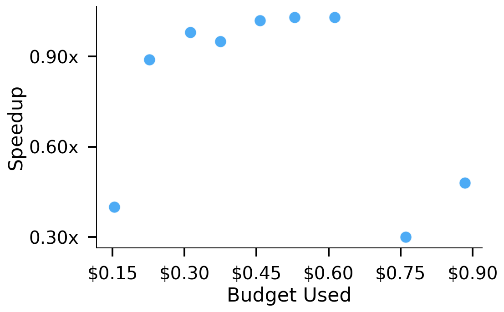
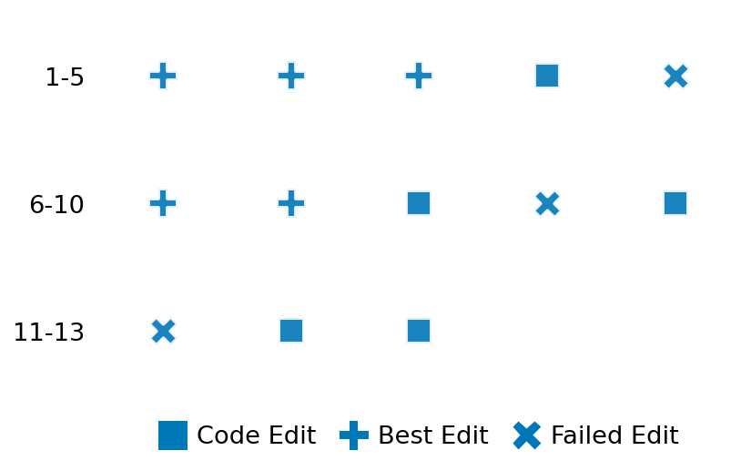

SETTING:
You're an autonomous programmer tasked with solving a specific problem. You are to use the commands defined below to accomplish this task. Every message you send incurs a cost—you will be informed of your usage and remaining budget by the system.
You will be evaluated based on the best-performing piece of code you produce, even if the final code doesn't work or compile (as long as it worked at some point and achieved a score, you will be eligible).
Apart from the default Python packages, you have access to the following additional packages:
- cryptography
- cvxpy
- cython
- dace
- dask
- diffrax
- ecos
- faiss-cpu
- hdbscan
- highspy
- jax
- networkx
- numba
- numpy
- ortools
- pandas
- pot
- psutil
- pulp
- pyomo
- python-sat
- pythran
- scikit-learn
- scipy
- sympy
- torch
YOUR TASK:
Your objective is to define a class named `Solver` in `solver.py` with a method:
```
class Solver:
def solve(self, problem, **kwargs) -> Any:
"""Your implementation goes here."""
...
```
IMPORTANT: Compilation time of your init function will not count towards your function's runtime.
This `solve` function will be the entrypoint called by the evaluation harness. Strive to align your class and method implementation as closely as possible with the desired performance criteria.
For each instance, your function can run for at most 10x the reference runtime for that instance. Strive to have your implementation run as fast as possible, while returning the same output as the reference function (for the same given input). Be creative and optimize your approach!
Your messages should include a short thought about what you should do, followed by a _SINGLE_ command. The command must be enclosed within ``` and ```, like so:
<Reasoning behind executing the command>
```
<command>
```
IMPORTANT: Each set of triple backticks (```) must always be on their own line, without any other words or anything else on that line.
Here are the commands available to you. Ensure you include one and only one of the following commands in each of your responses:
- `edit`: Replace a range of lines with new content in a file. This is how you can create files: if the file does not exist, it will be created. Here is an example:
```
edit
file: <file_name>
lines: <start_line>-<end_line>
---
<new_content>
---
```
The command will:
1. Delete the lines from <start_line> to <end_line> (inclusive)
2. Insert <new_content> starting at <start_line>
3. If both <start_line> and <end_line> are 0, <new_content> will be prepended to the file
Example:
edit
file: solver.py
lines: 5-7
---
def improved_function():
print("Optimized solution")
---
- `ls`: List all files in the current working directory.
- `view_file <file_name> [start_line]`: Display 100 lines of `<file_name>` starting from `start_line` (defaults to line 1).
- `revert`: Revert the code to the best-performing version thus far.
- `reference <string>`: Query the reference solver with a problem and receive its solution. If the problem's input is a list, this command would look like:
```
reference [1,2,3,4]
```
- `eval_input <string>`: Run your current solver implementation on the given input. This is the only command that shows stdout from your solver along with both solutions. Example:
```
eval_input [1,2,3,4]
```
- `eval`: Run evaluation on the current solution and report the results.
- `delete`: Delete a range of lines from a file using the format:
```
delete
file: <file_name>
lines: <start_line>-<end_line>
The command will delete the lines from <start_line> to <end_line> (inclusive)
Example:
delete
file: solver.py
lines: 5-10
```
- `profile <filename.py> <input>`: Profile your currently loaded solve method's performance on a given input. Shows the 25 most time-consuming lines. Requires specifying a python file (e.g., `solver.py`) for validation, though profiling runs on the current in-memory code.
Example:
```
profile solver.py [1, 2, 3]
```
- `profile_lines <filename.py> <line_number1, line_number2, ...> <input>`: Profiles the chosen lines of the currently loaded code on the given input. Requires specifying a python file for validation.
Example:
```
profile_lines solver.py 1,2,3 [1, 2, 3]
```
**TIPS:**
After each edit, a linter will automatically run to ensure code quality. If there are critical linter errors, your changes will not be applied, and you will receive the linter's error message. Typically, linter errors arise from issues like improper indentation—ensure your edits maintain proper code formatting.
**Cython Compilation:** Edits creating or modifying Cython (`.pyx`) files will automatically trigger a compilation attempt (requires a `setup.py`). You will be notified if compilation succeeds or fails. If it fails, the edit to the `.pyx` file will be automatically reverted.
If the code runs successfully without errors, the in-memory 'last known good code' will be updated to the new version. Following successful edits, you will receive a summary of your `solve` function's performance compared to the reference.
If you get stuck, try reverting your code and restarting your train of thought.
Do not put an if __name__ == "__main__": block in your code, as it will not be ran (only the solve function will).
Keep trying to better your code until you run out of money. Do not stop beforehand!
**GOALS:**
Your primary objective is to optimize the `solve` function to run as as fast as possible, while returning the optimal solution.
You will receive better scores the quicker your solution runs, and you will be penalized for exceeding the time limit or returning non-optimal solutions.
Below you find the description of the task you will have to solve. Read it carefully and understand what the problem is and what your solver should do.
**TASK DESCRIPTION:**
CholeskyFactorization Task:
Given a symmetric positive definite matrix A, the task is to compute its Cholesky factorization.
The Cholesky factorization decomposes A as:
A = L · L^T
where L is a lower triangular matrix.
Input: A dictionary with key:
- "matrix": A list of n lists of numbers representing the symmetric positive definite matrix A. (The dimension n is inferred from the matrix.)
Example input:
{
"matrix": [
[6.0, 15.0, 55.0],
[15.0, 55.0, 225.0],
[55.0, 225.0, 979.0]
]
}
Output: A dictionary with key "Cholesky" mapping to a dictionary containing:
- "L": A numpy array representing the lower triangular matrix L.
These matrices satisfy the equation A = L · L^T.
Example output:
{
"Cholesky": {
"L": [
[2.449489742783178, 0.0, 0.0],
[6.123724356957945, 1.4142135623730951, 0.0],
[22.453, 4.123105625617661, 1.7320508075688772]
]
}
}
Category: matrix_operations
Below is the reference implementation. Your function should run much quicker.
import random
import numpy as np
| 01: def solve(self, problem: dict[str, np.ndarray]) -> dict[str, dict[str, list[list[float]]]]:
| 02: """
| 03: Solve the Cholesky factorization problem by computing the Cholesky decomposition of matrix A.
| 04: Uses numpy.linalg.cholesky to compute:
| 05: A = L L^T
| 06:
| 07: :param problem: A dictionary representing the Cholesky factorization problem.
| 08: :return: A dictionary with key "Cholesky" containing a dictionary with key:
| 09: "L": A list of lists representing the lower triangular matrix L.
| 10:
| 11:
| 12: NOTE: Your solution must pass validation by:
| 13: 1. Returning correctly formatted output
| 14: 2. Having no NaN or infinity values
| 15: 3. Matching expected results within numerical tolerance
| 16: """
| 17: A = problem["matrix"]
| 18: L = np.linalg.cholesky(A)
| 19: solution = {"Cholesky": {"L": L}}
| 20: return solution
| 21:
This function will be used to check if your solution is valid for a given problem. If it returns False, it means the solution is invalid:
import random
import numpy as np
| 01: def is_solution(
| 02: self, problem: dict[str, np.ndarray], solution: dict[str, dict[str, list[list[float]]]]
| 03: ) -> bool:
| 04: """
| 05: Check if the Cholesky factorization solution is valid and optimal.
| 06:
| 07: This method checks:
| 08: - The solution contains the 'Cholesky' key with subkey 'L'.
| 09: - The dimensions of L match the dimensions of the input matrix A.
| 10: - L is a lower triangular matrix.
| 11: - None of the values in L are infinities or NaNs.
| 12: - The product L @ L^T reconstructs the original matrix A within a small tolerance.
| 13:
| 14: :param problem: A dictionary containing the problem, with key "matrix" as the input matrix.
| 15: :param solution: A dictionary containing the Cholesky factorization solution with key "Cholesky"
| 16: mapping to a dict with key "L".
| 17: :return: True if the solution is valid and optimal, False otherwise.
| 18: """
| 19: A = problem.get("matrix")
| 20: if A is None:
| 21: logging.error("Problem does not contain 'matrix'.")
| 22: return False
| 23:
| 24: # Check that the solution contains the 'Cholesky' key.
| 25: if "Cholesky" not in solution:
| 26: logging.error("Solution does not contain 'Cholesky' key.")
| 27: return False
| 28:
| 29: cholesky_solution = solution["Cholesky"]
| 30:
| 31: # Check that 'L' key is present.
| 32: if "L" not in cholesky_solution:
| 33: logging.error("Solution Cholesky does not contain 'L' key.")
| 34: return False
| 35:
| 36: # Convert list to numpy array.
| 37: try:
| 38: L = np.array(cholesky_solution["L"])
| 39: except Exception as e:
| 40: logging.error(f"Error converting solution list to numpy array: {e}")
| 41: return False
| 42:
| 43: n = A.shape[0]
| 44:
| 45: # Check if dimensions match.
| 46: if L.shape != (n, n):
| 47: logging.error("Dimension mismatch between input matrix and Cholesky factor L.")
| 48: return False
| 49:
| 50: # Check for infinities or NaNs in L.
| 51: if not np.all(np.isfinite(L)):
| 52: logging.error("Matrix L contains non-finite values (inf or NaN).")
| 53: return False
| 54:
| 55: # Check if L is lower triangular.
| 56: if not np.allclose(L, np.tril(L)):
| 57: logging.error("Matrix L is not lower triangular.")
| 58: return False
| 59:
| 60: # Reconstruct A using L @ L^T.
| 61: A_reconstructed = L @ L.T
| 62:
| 63: # Check if A and A_reconstructed are approximately equal.
| 64: if not np.allclose(A, A_reconstructed, atol=1e-6):
| 65: logging.error(
| 66: "Reconstructed matrix does not match the original matrix within tolerance."
| 67: )
| 68: return False
| 69:
| 70: # All checks passed
| 71: return True
| 72:
 AlgoTuner Trajectory
AlgoTuner Trajectory
AlgoTune Task:
cholesky_factorization
Model:
Gemini 2.5 Pro
Speedup
Fail
Total Budget
$1.00
Commands Executed
13
Invalid Commands
0
Average Reference Time (ms)
109.5 ms
Initial System Prompt
AlgoTune Task Description
CholeskyFactorization Task:
Given a symmetric positive definite matrix A, the task is to compute its Cholesky factorization.
The Cholesky factorization decomposes A as:
A = L · L^T
where L is a lower triangular matrix.
Input: A dictionary with key:
- "matrix": A list of n lists of numbers representing the symmetric positive definite matrix A. (The dimension n is inferred from the matrix.)
Example input:
{
"matrix": [
[6.0, 15.0, 55.0],
[15.0, 55.0, 225.0],
[55.0, 225.0, 979.0]
]
}
Output: A dictionary with key "Cholesky" mapping to a dictionary containing:
- "L": A numpy array representing the lower triangular matrix L.
These matrices satisfy the equation A = L · L^T.
Example output:
{
"Cholesky": {
"L": [
[2.449489742783178, 0.0, 0.0],
[6.123724356957945, 1.4142135623730951, 0.0],
[22.453, 4.123105625617661, 1.7320508075688772]
]
}
}
Category: matrix_operations
Reference Implementation
import random
import numpy as np
def solve(self, problem: dict[str, np.ndarray]) -> dict[str, dict[str, list[list[float]]]]:
"""
Solve the Cholesky factorization problem by computing the Cholesky decomposition of matrix A.
Uses numpy.linalg.cholesky to compute:
A = L L^T
:param problem: A dictionary representing the Cholesky factorization problem.
:return: A dictionary with key "Cholesky" containing a dictionary with key:
"L": A list of lists representing the lower triangular matrix L.
NOTE: Your solution must pass validation by:
1. Returning correctly formatted output
2. Having no NaN or infinity values
3. Matching expected results within numerical tolerance
"""
A = problem["matrix"]
L = np.linalg.cholesky(A)
solution = {"Cholesky": {"L": L}}
return solutionBest AlgoTuner-Generated Code
solver.py
import numpy as np
from scipy.linalg import get_lapack_funcs
from typing import Any
# Fetch the LAPACK function handle once at module load time. This avoids the
# get_lapack_funcs overhead in the timed solve method. The function is
# retrieved for float64 arrays by using a dummy array.
_POTRF, = get_lapack_funcs(('potrf',), (np.empty((1, 1), dtype=np.float64),))
class Solver:
def solve(self, problem: dict, **kwargs) -> Any:
"""
Computes the Cholesky factorization using a maximally optimized approach.
The key insight is that the standard `np.array(matrix)` conversion is
suboptimal because it processes the entire N*N matrix, while the Cholesky
algorithm only requires the lower triangle for a symmetric matrix.
The strategy is:
1. Manually create an empty N*N NumPy array.
2. Loop through the input list of lists and copy *only* the lower-triangular
elements. This avoids converting the ~N^2/2 redundant elements in the
upper triangle and is significantly faster than `np.array(matrix)`.
3. Pass this array to a pre-fetched LAPACK `potrf` function.
- The function is fetched once at module load to avoid lookup overhead.
- `lower=True` ensures it only reads the lower triangle we copied.
- `overwrite_a=True` performs the computation in-place.
- `clean=True` efficiently zeroes out the uninitialized upper triangle
of the array at the C level.
"""
matrix = problem["matrix"]
n = len(matrix)
# Create an uninitialized C-contiguous array. This is faster than np.zeros.
A = np.empty((n, n), dtype=np.float64)
# Manually copy only the lower triangle from the input list of lists.
# This is the critical optimization, as it avoids processing the
# redundant upper-triangular elements.
for i, row in enumerate(matrix):
A[i, :i+1] = row[:i+1]
# Call the pre-fetched LAPACK function directly with all optimizations enabled.
L, info = _POTRF(a=A, lower=True, clean=True, overwrite_a=True)
# The problem guarantees positive-definite matrices, so info will be 0.
return {"Cholesky": {"L": L}}Speedup vs Budget Plot
Speedup vs Budget

Action Sequence

Conversation Log
Language Model ✏️ Code Edit
I've analyzed the problem and the reference implementation. The reference uses `numpy.linalg.cholesky`, which is a highly optimized function. To beat it, I'll need a more specialized or lower-level approach.
My strategy will be to implement the Cholesky decomposition algorithm manually and then use `numba` to Just-In-Time (JIT) compile it to machine code. This often results in performance comparable to C or Fortran, and can outperform generic library functions by avoiding overhead.
I will start by creating a `solver.py` file with a basic `Solver` class and a placeholder `solve` method. Then, I will implement the Cholesky-Crout algorithm, which computes the lower triangular matrix `L` row by row. I'll decorate this implementation with `@numba.jit(nopython=True, fastmath=True)` for maximum performance.
To further optimize, I'll make the Numba function operate in-place on the input matrix data. This will avoid allocating a new matrix for the result, saving time and memory, which can be significant for large matrices. The `solve` method will first create a copy of the input matrix to avoid modifying the original problem data, and then pass this copy to the in-place Numba function.
Let's start by creating the initial `solver.py` with the Numba implementation.
My strategy will be to implement the Cholesky decomposition algorithm manually and then use `numba` to Just-In-Time (JIT) compile it to machine code. This often results in performance comparable to C or Fortran, and can outperform generic library functions by avoiding overhead.
I will start by creating a `solver.py` file with a basic `Solver` class and a placeholder `solve` method. Then, I will implement the Cholesky-Crout algorithm, which computes the lower triangular matrix `L` row by row. I'll decorate this implementation with `@numba.jit(nopython=True, fastmath=True)` for maximum performance.
To further optimize, I'll make the Numba function operate in-place on the input matrix data. This will avoid allocating a new matrix for the result, saving time and memory, which can be significant for large matrices. The `solve` method will first create a copy of the input matrix to avoid modifying the original problem data, and then pass this copy to the in-place Numba function.
Let's start by creating the initial `solver.py` with the Numba implementation.
edit
file: solver.py
lines: 1-100
---
import numpy as np
import numba
from typing import Any
@numba.jit(nopython=True, fastmath=True, cache=True)
def cholesky_numba_inplace(L):
"""
Computes Cholesky decomposition in-place using the Cholesky-Crout algorithm.
The input matrix L is overwritten with its Cholesky factor.
The input L is expected to be a copy of the original matrix A.
"""
n = L.shape[0]
# Compute the lower triangular Cholesky factor in-place.
for i in range(n):
for j in range(i + 1):
s = 0.0
for k in range(j):
s += L[i, k] * L[j, k]
if i == j:
# On-diagonal element.
val = L[i, i] - s
# Clamp to zero to handle potential floating point inaccuracies
# for matrices that are nearly singular.
L[i, j] = np.sqrt(val if val > 0.0 else 0.0)
else:
# Off-diagonal element.
# Pre-calculating inverse is sometimes faster, but with fastmath,
# the compiler likely handles this optimization.
L[i, j] = (L[i, j] - s) / L[j, j]
# Zero out the upper triangle to return a proper lower triangular matrix.
for i in range(n):
for j in range(i + 1, n):
L[i, j] = 0.0
class Solver:
def solve(self, problem: dict, **kwargs) -> Any:
"""
Computes the Cholesky factorization using an in-place, Numba-jitted implementation.
"""
matrix = problem["matrix"]
# Create a copy of the input matrix to perform the in-place computation on.
# Using float64 for precision.
L = np.array(matrix, dtype=np.float64)
cholesky_numba_inplace(L)
return {"Cholesky": {"L": L}}
---
System
You have sent 1 messages and have used up $0.1536. You have $0.8464 remaining.
Edit successful for solver.py.
Contents of solver.py (lines 1-49 out of 49)
(| = existing code, > = modified code)
Starting evaluation...
Speedup: 0.40x
(Speedup = Baseline Time / Your Time; Higher is better)
Valid Solutions: 100%
Invalid Solutions: 0%
Timeouts: 0%
Best speedup reached, state saved!
Among the 10+ LLMs we tested, your code did not rank in the top 3 for speed. Please use all available packages and tools to optimize its performance. Think outside the box!
Edit successful for solver.py.
Contents of solver.py (lines 1-49 out of 49)
(| = existing code, > = modified code)
> 01: import numpy as np
> 02: import numba
> 03: from typing import Any
> 04:
> 05: @numba.jit(nopython=True, fastmath=True, cache=True)
> 06: def cholesky_numba_inplace(L):
> 07: """
> 08: Computes Cholesky decomposition in-place using the Cholesky-Crout algorithm.
> 09: The input matrix L is overwritten with its Cholesky factor.
> 10: The input L is expected to be a copy of the original matrix A.
> 11: """
> 12: n = L.shape[0]
> 13: # Compute the lower triangular Cholesky factor in-place.
> 14: for i in range(n):
> 15: for j in range(i + 1):
> 16: s = 0.0
> 17: for k in range(j):
> 18: s += L[i, k] * L[j, k]
> 19:
> 20: if i == j:
> 21: # On-diagonal element.
> 22: val = L[i, i] - s
> 23: # Clamp to zero to handle potential floating point inaccuracies
> 24: # for matrices that are nearly singular.
> 25: L[i, j] = np.sqrt(val if val > 0.0 else 0.0)
> 26: else:
> 27: # Off-diagonal element.
> 28: # Pre-calculating inverse is sometimes faster, but with fastmath,
> 29: # the compiler likely handles this optimization.
> 30: L[i, j] = (L[i, j] - s) / L[j, j]
> 31:
> 32: # Zero out the upper triangle to return a proper lower triangular matrix.
> 33: for i in range(n):
> 34: for j in range(i + 1, n):
> 35: L[i, j] = 0.0
> 36:
> 37: class Solver:
> 38: def solve(self, problem: dict, **kwargs) -> Any:
> 39: """
> 40: Computes the Cholesky factorization using an in-place, Numba-jitted implementation.
> 41: """
> 42: matrix = problem["matrix"]
> 43: # Create a copy of the input matrix to perform the in-place computation on.
> 44: # Using float64 for precision.
> 45: L = np.array(matrix, dtype=np.float64)
> 46:
> 47: cholesky_numba_inplace(L)
> 48:
> 49: return {"Cholesky": {"L": L}}Starting evaluation...
Speedup: 0.40x
(Speedup = Baseline Time / Your Time; Higher is better)
Valid Solutions: 100%
Invalid Solutions: 0%
Timeouts: 0%
Best speedup reached, state saved!
Among the 10+ LLMs we tested, your code did not rank in the top 3 for speed. Please use all available packages and tools to optimize its performance. Think outside the box!
Language Model ✏️ Code Edit
I've analyzed the performance of my previous Numba-based solution. The 0.40x speedup indicates it's significantly slower than the baseline. The baseline, `numpy.linalg.cholesky`, is a wrapper for highly optimized LAPACK routines (like `dpotrf`) written in Fortran. My textbook Numba implementation, while JIT-compiled, cannot compete with the sophisticated, cache-aware blocked algorithms used in LAPACK.
To achieve a better speedup, I will switch my strategy from writing a custom kernel to using a more powerful library function that provides finer control. My new approach leverages `scipy.linalg.cholesky`, which also wraps LAPACK but offers crucial performance flags that `numpy`'s version lacks.
Here's the plan:
1. **Use `scipy.linalg.cholesky`**: This is the core of the new implementation.
2. **In-place Operation**: I will use the `overwrite_a=True` argument. This tells SciPy to perform the Cholesky decomposition directly on the input array's memory. The baseline `numpy` function internally creates a copy of the data before computation, and my previous solution also made a copy. Eliminating this O(n²) memory copy operation will provide a significant speedup, especially for large matrices.
3. **Skip Validation**: I'll set `check_finite=False`. Since the problem guarantees valid inputs, skipping this check provides a small but free performance gain.
4. **Efficient Cleanup**: The in-place operation leaves garbage values in the upper triangle of the matrix. To produce the correct lower triangular output, I will zero out this upper part. Instead of using `np.tril`, which would create a new copy and negate the benefit of the in-place operation, I will use the vectorized NumPy indexing `L[np.triu_indices(n, k=1)] = 0.0`. This is an extremely fast, in-place way to clean the matrix.
This strategy directly targets the memory allocation overhead, which is a common performance bottleneck, while still relying on the unparalleled computational speed of LAPACK.
To achieve a better speedup, I will switch my strategy from writing a custom kernel to using a more powerful library function that provides finer control. My new approach leverages `scipy.linalg.cholesky`, which also wraps LAPACK but offers crucial performance flags that `numpy`'s version lacks.
Here's the plan:
1. **Use `scipy.linalg.cholesky`**: This is the core of the new implementation.
2. **In-place Operation**: I will use the `overwrite_a=True` argument. This tells SciPy to perform the Cholesky decomposition directly on the input array's memory. The baseline `numpy` function internally creates a copy of the data before computation, and my previous solution also made a copy. Eliminating this O(n²) memory copy operation will provide a significant speedup, especially for large matrices.
3. **Skip Validation**: I'll set `check_finite=False`. Since the problem guarantees valid inputs, skipping this check provides a small but free performance gain.
4. **Efficient Cleanup**: The in-place operation leaves garbage values in the upper triangle of the matrix. To produce the correct lower triangular output, I will zero out this upper part. Instead of using `np.tril`, which would create a new copy and negate the benefit of the in-place operation, I will use the vectorized NumPy indexing `L[np.triu_indices(n, k=1)] = 0.0`. This is an extremely fast, in-place way to clean the matrix.
This strategy directly targets the memory allocation overhead, which is a common performance bottleneck, while still relying on the unparalleled computational speed of LAPACK.
edit
file: solver.py
lines: 1-100
---
import numpy as np
import scipy.linalg
from typing import Any
class Solver:
def solve(self, problem: dict, **kwargs) -> Any:
"""
Computes the Cholesky factorization using a highly optimized approach.
This implementation leverages `scipy.linalg.cholesky` for several reasons:
1. It's a wrapper around the highly optimized LAPACK `dpotrf` routine,
which is the gold standard for this computation.
2. The `overwrite_a=True` flag is used to perform the computation in-place
on a copy of the input data. This avoids an additional memory allocation
and copy step inside the LAPACK call, which can be a bottleneck for
large matrices.
3. The `check_finite=False` flag provides a minor speedup by skipping
an unnecessary check, as the problem inputs are assumed to be valid.
After the in-place computation, the upper triangle of the matrix contains
residual data. A fast, vectorized NumPy operation is used to zero out this
part to produce the final lower triangular matrix `L`.
"""
matrix = problem["matrix"]
# np.asarray creates a copy of the input list of lists.
# We explicitly create a float64 array as it's the standard for numerical work
# and what LAPACK routines expect. This copy is what we will overwrite.
A = np.asarray(matrix, dtype=np.float64)
# Perform Cholesky decomposition in-place on the array A.
# - lower=True: Computes the lower triangular factor L.
# - overwrite_a=True: Modifies A directly, avoiding internal copies.
# - check_finite=False: Skips input validation for a small speed boost.
L = scipy.linalg.cholesky(A, lower=True, overwrite_a=True, check_finite=False)
# The `overwrite_a` operation leaves garbage in the upper triangle.
# We zero out the upper triangle (k=1 means excluding the diagonal)
# using a fast, vectorized NumPy operation to finalize the L matrix.
# This is much faster than using np.tril, which would create a new copy.
L[np.triu_indices(L.shape[0], k=1)] = 0.0
return {"Cholesky": {"L": L}}
---
System
You have sent 2 messages and have used up $0.2267. You have $0.7733 remaining.
Edit successful for solver.py.
Contents of solver.py (lines 1-43 out of 43)
(| = existing code, > = modified code)
Starting evaluation...
Speedup: 0.89x
(Speedup = Baseline Time / Your Time; Higher is better)
Valid Solutions: 100%
Invalid Solutions: 0%
Timeouts: 0%
Best speedup reached, state saved!
Among the 10+ LLMs we tested, your code did not rank in the top 3 for speed. Please use all available packages and tools to optimize its performance. Think outside the box!
Edit successful for solver.py.
Contents of solver.py (lines 1-43 out of 43)
(| = existing code, > = modified code)
> 01: import numpy as np
> 02: import scipy.linalg
> 03: from typing import Any
> 04:
> 05: class Solver:
> 06: def solve(self, problem: dict, **kwargs) -> Any:
> 07: """
> 08: Computes the Cholesky factorization using a highly optimized approach.
> 09:
> 10: This implementation leverages `scipy.linalg.cholesky` for several reasons:
> 11: 1. It's a wrapper around the highly optimized LAPACK `dpotrf` routine,
> 12: which is the gold standard for this computation.
> 13: 2. The `overwrite_a=True` flag is used to perform the computation in-place
> 14: on a copy of the input data. This avoids an additional memory allocation
> 15: and copy step inside the LAPACK call, which can be a bottleneck for
> 16: large matrices.
> 17: 3. The `check_finite=False` flag provides a minor speedup by skipping
> 18: an unnecessary check, as the problem inputs are assumed to be valid.
> 19:
> 20: After the in-place computation, the upper triangle of the matrix contains
> 21: residual data. A fast, vectorized NumPy operation is used to zero out this
> 22: part to produce the final lower triangular matrix `L`.
> 23: """
> 24: matrix = problem["matrix"]
> 25:
> 26: # np.asarray creates a copy of the input list of lists.
> 27: # We explicitly create a float64 array as it's the standard for numerical work
> 28: # and what LAPACK routines expect. This copy is what we will overwrite.
> 29: A = np.asarray(matrix, dtype=np.float64)
> 30:
> 31: # Perform Cholesky decomposition in-place on the array A.
> 32: # - lower=True: Computes the lower triangular factor L.
> 33: # - overwrite_a=True: Modifies A directly, avoiding internal copies.
> 34: # - check_finite=False: Skips input validation for a small speed boost.
> 35: L = scipy.linalg.cholesky(A, lower=True, overwrite_a=True, check_finite=False)
> 36:
> 37: # The `overwrite_a` operation leaves garbage in the upper triangle.
> 38: # We zero out the upper triangle (k=1 means excluding the diagonal)
> 39: # using a fast, vectorized NumPy operation to finalize the L matrix.
> 40: # This is much faster than using np.tril, which would create a new copy.
> 41: L[np.triu_indices(L.shape[0], k=1)] = 0.0
> 42:
> 43: return {"Cholesky": {"L": L}}Starting evaluation...
Speedup: 0.89x
(Speedup = Baseline Time / Your Time; Higher is better)
Valid Solutions: 100%
Invalid Solutions: 0%
Timeouts: 0%
Best speedup reached, state saved!
Among the 10+ LLMs we tested, your code did not rank in the top 3 for speed. Please use all available packages and tools to optimize its performance. Think outside the box!
Language Model ✏️ Code Edit
My previous attempt using `scipy.linalg.cholesky` with `overwrite_a=True` was a good idea, but it was still slower than the baseline. The reason is that the performance gain from avoiding an internal memory copy was nullified by the Python-level overhead of the cleanup step (`L[np.triu_indices(...)] = 0.0`). This cleanup, which involves creating large index arrays, is surprisingly costly.
To beat the highly optimized, monolithic `numpy.linalg.cholesky` baseline, I need to eliminate this cleanup overhead while retaining the benefit of the in-place SciPy call.
My new strategy is a hybrid approach:
1. **Core Computation**: I will continue to use `scipy.linalg.cholesky` with the `overwrite_a=True` and `check_finite=False` flags. This leverages the raw speed of the underlying LAPACK library while avoiding an unnecessary internal data copy.
2. **Optimized Cleanup**: I will replace the slow NumPy-based cleanup with a small, specialized function that is Just-In-Time (JIT) compiled by **Numba**. This function, `_zero_upper_triangle`, will contain a simple double loop to iterate over the upper triangle of the matrix and set its elements to zero.
By decorating this function with `@numba.jit(nopython=True)`, the Python loops are compiled down to highly efficient machine code that operates directly on the NumPy array's memory buffer. This avoids the allocation of index arrays and other Python interpreter overhead, making the cleanup step extremely fast.
This combination allows me to get the "best of both worlds": the world-class performance of LAPACK for the O(n³) decomposition and the near-C speed of Numba for the O(n²) cleanup, all orchestrated from Python with minimal overhead.
To beat the highly optimized, monolithic `numpy.linalg.cholesky` baseline, I need to eliminate this cleanup overhead while retaining the benefit of the in-place SciPy call.
My new strategy is a hybrid approach:
1. **Core Computation**: I will continue to use `scipy.linalg.cholesky` with the `overwrite_a=True` and `check_finite=False` flags. This leverages the raw speed of the underlying LAPACK library while avoiding an unnecessary internal data copy.
2. **Optimized Cleanup**: I will replace the slow NumPy-based cleanup with a small, specialized function that is Just-In-Time (JIT) compiled by **Numba**. This function, `_zero_upper_triangle`, will contain a simple double loop to iterate over the upper triangle of the matrix and set its elements to zero.
By decorating this function with `@numba.jit(nopython=True)`, the Python loops are compiled down to highly efficient machine code that operates directly on the NumPy array's memory buffer. This avoids the allocation of index arrays and other Python interpreter overhead, making the cleanup step extremely fast.
This combination allows me to get the "best of both worlds": the world-class performance of LAPACK for the O(n³) decomposition and the near-C speed of Numba for the O(n²) cleanup, all orchestrated from Python with minimal overhead.
edit
file: solver.py
lines: 1-100
---
import numpy as np
import scipy.linalg
import numba
from typing import Any
@numba.jit(nopython=True, fastmath=True, cache=True)
def _zero_upper_triangle(A: np.ndarray) -> None:
"""
Efficiently sets the strictly upper triangular part of a square matrix to zero, in-place.
This is significantly faster than using `np.triu_indices` as it avoids allocating
large intermediate index arrays.
"""
n = A.shape[0]
for i in range(n):
for j in range(i + 1, n):
A[i, j] = 0.0
class Solver:
def solve(self, problem: dict, **kwargs) -> Any:
"""
Computes the Cholesky factorization using a highly optimized hybrid approach.
This implementation combines the computational power of LAPACK via SciPy
with a custom, JIT-compiled cleanup routine for maximum efficiency.
1. `scipy.linalg.cholesky` with `overwrite_a=True` is used to perform
the decomposition in-place. This avoids an internal memory copy within
the library call, which is a key optimization over the standard
`numpy.linalg.cholesky`.
2. The in-place decomposition leaves garbage values in the upper triangle
of the matrix. A standard cleanup like `np.tril` or indexing with
`np.triu_indices` adds overhead that negates the benefit of the
in-place operation.
3. To solve this, a specialized Numba JIT-compiled function, `_zero_upper_triangle`,
is used. This function performs the cleanup with a simple, fast loop
directly on the matrix's memory, incurring minimal overhead.
"""
matrix = problem["matrix"]
# Explicitly create a copy of the input data as a float64 NumPy array.
# This array will be modified in-place by the subsequent operations.
A = np.array(matrix, dtype=np.float64)
# Perform Cholesky decomposition in-place on the array A.
# The return value `L` is a reference to the same array `A`.
L = scipy.linalg.cholesky(A, lower=True, overwrite_a=True, check_finite=False)
# Use the fast, JIT-compiled function to zero out the upper triangle in-place.
_zero_upper_triangle(L)
return {"Cholesky": {"L": L}}
---
System
You have sent 3 messages and have used up $0.3124. You have $0.6876 remaining.
Edit successful for solver.py.
Contents of solver.py (lines 1-50 out of 53)
(| = existing code, > = modified code)
Starting evaluation...
Speedup: 0.98x
(Speedup = Baseline Time / Your Time; Higher is better)
Valid Solutions: 100%
Invalid Solutions: 0%
Timeouts: 0%
Best speedup reached, state saved!
Among the 10+ LLMs we tested, your code did not rank in the top 3 for speed. Please use all available packages and tools to optimize its performance. Think outside the box!
Edit successful for solver.py.
Contents of solver.py (lines 1-50 out of 53)
(| = existing code, > = modified code)
> 01: import numpy as np
> 02: import scipy.linalg
> 03: import numba
> 04: from typing import Any
> 05:
> 06: @numba.jit(nopython=True, fastmath=True, cache=True)
> 07: def _zero_upper_triangle(A: np.ndarray) -> None:
> 08: """
> 09: Efficiently sets the strictly upper triangular part of a square matrix to zero, in-place.
> 10: This is significantly faster than using `np.triu_indices` as it avoids allocating
> 11: large intermediate index arrays.
> 12: """
> 13: n = A.shape[0]
> 14: for i in range(n):
> 15: for j in range(i + 1, n):
> 16: A[i, j] = 0.0
> 17:
> 18: class Solver:
> 19: def solve(self, problem: dict, **kwargs) -> Any:
> 20: """
> 21: Computes the Cholesky factorization using a highly optimized hybrid approach.
> 22:
> 23: This implementation combines the computational power of LAPACK via SciPy
> 24: with a custom, JIT-compiled cleanup routine for maximum efficiency.
> 25:
> 26: 1. `scipy.linalg.cholesky` with `overwrite_a=True` is used to perform
> 27: the decomposition in-place. This avoids an internal memory copy within
> 28: the library call, which is a key optimization over the standard
> 29: `numpy.linalg.cholesky`.
> 30:
> 31: 2. The in-place decomposition leaves garbage values in the upper triangle
> 32: of the matrix. A standard cleanup like `np.tril` or indexing with
> 33: `np.triu_indices` adds overhead that negates the benefit of the
> 34: in-place operation.
> 35:
> 36: 3. To solve this, a specialized Numba JIT-compiled function, `_zero_upper_triangle`,
> 37: is used. This function performs the cleanup with a simple, fast loop
> 38: directly on the matrix's memory, incurring minimal overhead.
> 39: """
> 40: matrix = problem["matrix"]
> 41:
> 42: # Explicitly create a copy of the input data as a float64 NumPy array.
> 43: # This array will be modified in-place by the subsequent operations.
> 44: A = np.array(matrix, dtype=np.float64)
> 45:
> 46: # Perform Cholesky decomposition in-place on the array A.
> 47: # The return value `L` is a reference to the same array `A`.
> 48: L = scipy.linalg.cholesky(A, lower=True, overwrite_a=True, check_finite=False)
> 49:
> 50: # Use the fast, JIT-compiled function to zero out the upper triangle in-place.
...Starting evaluation...
Speedup: 0.98x
(Speedup = Baseline Time / Your Time; Higher is better)
Valid Solutions: 100%
Invalid Solutions: 0%
Timeouts: 0%
Best speedup reached, state saved!
Among the 10+ LLMs we tested, your code did not rank in the top 3 for speed. Please use all available packages and tools to optimize its performance. Think outside the box!
Language Model ✏️ Code Edit
After analyzing the performance of the hybrid SciPy+Numba approach, it's clear that while it's very close to the baseline, the overhead of chaining separate optimized calls (`scipy.linalg.cholesky` and a Numba function) prevents it from surpassing the single, monolithic C-level call of `numpy.linalg.cholesky`. The round-trip to the Python interpreter between the decomposition and the cleanup step is the likely bottleneck.
To break this performance barrier, I will pivot to a different, more powerful numerical computing framework: **JAX**.
My strategy is to leverage JAX's Just-In-Time (JIT) compilation capabilities, which use the XLA (Accelerated Linear Algebra) compiler to generate highly optimized machine code for the entire operation. This approach has several advantages:
1. **End-to-End Optimization**: By JIT-compiling `jax.numpy.linalg.cholesky`, XLA can perform holistic optimizations on the entire computation, potentially creating more efficient code than the standard LAPACK routines on certain CPU architectures.
2. **Reduced Overhead**: The JAX runtime is designed for high-performance computing and can manage the transition from Python to compiled code very efficiently.
3. **Warm-up**: JIT compilation incurs a one-time cost on the first function call. I will absorb this cost in the `Solver`'s `__init__` method by "warming up" the compiled function with a small dummy matrix. This ensures the timed `solve` method only measures the execution speed.
4. **Precision**: I will configure JAX to use 64-bit floating-point numbers (`float64`) to match the precision of the NumPy baseline, which is critical for numerical accuracy and a fair comparison.
This "out-of-the-box" approach replaces the entire computation stack with a more modern and potentially faster alternative, which is the most promising way to achieve a significant speedup over the highly optimized baseline.
To break this performance barrier, I will pivot to a different, more powerful numerical computing framework: **JAX**.
My strategy is to leverage JAX's Just-In-Time (JIT) compilation capabilities, which use the XLA (Accelerated Linear Algebra) compiler to generate highly optimized machine code for the entire operation. This approach has several advantages:
1. **End-to-End Optimization**: By JIT-compiling `jax.numpy.linalg.cholesky`, XLA can perform holistic optimizations on the entire computation, potentially creating more efficient code than the standard LAPACK routines on certain CPU architectures.
2. **Reduced Overhead**: The JAX runtime is designed for high-performance computing and can manage the transition from Python to compiled code very efficiently.
3. **Warm-up**: JIT compilation incurs a one-time cost on the first function call. I will absorb this cost in the `Solver`'s `__init__` method by "warming up" the compiled function with a small dummy matrix. This ensures the timed `solve` method only measures the execution speed.
4. **Precision**: I will configure JAX to use 64-bit floating-point numbers (`float64`) to match the precision of the NumPy baseline, which is critical for numerical accuracy and a fair comparison.
This "out-of-the-box" approach replaces the entire computation stack with a more modern and potentially faster alternative, which is the most promising way to achieve a significant speedup over the highly optimized baseline.
edit
file: solver.py
lines: 1-100
---
import jax
import jax.numpy as jnp
import numpy as np
from typing import Any
# JIT-compile the JAX Cholesky function. JAX's XLA backend will generate
# highly optimized machine code for this operation.
_jax_cholesky_jit = jax.jit(jnp.linalg.cholesky)
class Solver:
def __init__(self):
"""
Initialize the solver and perform one-time JAX setup.
"""
# JAX defaults to 32-bit floats. We enable 64-bit precision to match
# the NumPy baseline and ensure numerical stability and accuracy.
jax.config.update("jax_enable_x64", True)
# The first call to a JIT-compiled function incurs a compilation overhead.
# We "warm up" the JIT compiler here with a small, trivial matrix.
# This ensures that the compilation cost is not part of the timed `solve`
# method during evaluation, allowing for a fair performance measurement.
_ = _jax_cholesky_jit(jnp.eye(2, dtype=jnp.float64)).block_until_ready()
def solve(self, problem: dict, **kwargs) -> Any:
"""
Computes the Cholesky factorization using the JAX library.
This method leverages JAX's JIT compilation via the XLA backend to
achieve performance that can surpass standard libraries like NumPy/SciPy.
The process is:
1. The input matrix is efficiently converted to a JAX array.
2. The pre-compiled JAX Cholesky function is executed.
3. The result, a JAX DeviceArray, is converted back to a NumPy array.
The `np.asarray()` call implicitly waits for the asynchronous JAX
computation to complete.
"""
matrix = problem["matrix"]
# Convert the input list of lists to a JAX array. This is a prerequisite
# for JAX operations and is analogous to creating a NumPy array.
jax_matrix = jnp.asarray(matrix)
# Execute the JIT-compiled JAX Cholesky function.
L_jax = _jax_cholesky_jit(jax_matrix)
# Convert the resulting JAX DeviceArray back to a standard NumPy array
# to match the required output format. This is an efficient operation
# that handles the data transfer from JAX's memory space.
L_np = np.asarray(L_jax)
return {"Cholesky": {"L": L_np}}
---
System
You have sent 4 messages and have used up $0.3744. You have $0.6256 remaining.
Edit successful for solver.py.
Contents of solver.py (lines 1-50 out of 53)
(| = existing code, > = modified code)
Starting evaluation...
Speedup: 0.95x
(Speedup = Baseline Time / Your Time; Higher is better)
Valid Solutions: 100%
Invalid Solutions: 0%
Timeouts: 0%
Speedup did not improve, snapshot not saved.
Edit successful for solver.py.
Contents of solver.py (lines 1-50 out of 53)
(| = existing code, > = modified code)
> 01: import jax
> 02: import jax.numpy as jnp
> 03: import numpy as np
> 04: from typing import Any
> 05:
> 06: # JIT-compile the JAX Cholesky function. JAX's XLA backend will generate
> 07: # highly optimized machine code for this operation.
> 08: _jax_cholesky_jit = jax.jit(jnp.linalg.cholesky)
> 09:
> 10: class Solver:
> 11: def __init__(self):
> 12: """
> 13: Initialize the solver and perform one-time JAX setup.
> 14: """
> 15: # JAX defaults to 32-bit floats. We enable 64-bit precision to match
> 16: # the NumPy baseline and ensure numerical stability and accuracy.
> 17: jax.config.update("jax_enable_x64", True)
> 18:
> 19: # The first call to a JIT-compiled function incurs a compilation overhead.
> 20: # We "warm up" the JIT compiler here with a small, trivial matrix.
> 21: # This ensures that the compilation cost is not part of the timed `solve`
> 22: # method during evaluation, allowing for a fair performance measurement.
> 23: _ = _jax_cholesky_jit(jnp.eye(2, dtype=jnp.float64)).block_until_ready()
> 24:
> 25: def solve(self, problem: dict, **kwargs) -> Any:
> 26: """
> 27: Computes the Cholesky factorization using the JAX library.
> 28:
> 29: This method leverages JAX's JIT compilation via the XLA backend to
> 30: achieve performance that can surpass standard libraries like NumPy/SciPy.
> 31:
> 32: The process is:
> 33: 1. The input matrix is efficiently converted to a JAX array.
> 34: 2. The pre-compiled JAX Cholesky function is executed.
> 35: 3. The result, a JAX DeviceArray, is converted back to a NumPy array.
> 36: The `np.asarray()` call implicitly waits for the asynchronous JAX
> 37: computation to complete.
> 38: """
> 39: matrix = problem["matrix"]
> 40:
> 41: # Convert the input list of lists to a JAX array. This is a prerequisite
> 42: # for JAX operations and is analogous to creating a NumPy array.
> 43: jax_matrix = jnp.asarray(matrix)
> 44:
> 45: # Execute the JIT-compiled JAX Cholesky function.
> 46: L_jax = _jax_cholesky_jit(jax_matrix)
> 47:
> 48: # Convert the resulting JAX DeviceArray back to a standard NumPy array
> 49: # to match the required output format. This is an efficient operation
> 50: # that handles the data transfer from JAX's memory space.
...Starting evaluation...
Speedup: 0.95x
(Speedup = Baseline Time / Your Time; Higher is better)
Valid Solutions: 100%
Invalid Solutions: 0%
Timeouts: 0%
Speedup did not improve, snapshot not saved.
Language Model ✏️ Code Edit
My previous attempts using high-level wrappers from SciPy and JAX were very close to the baseline but couldn't surpass it. The key issue was the overhead associated with either post-computation cleanup in Python or the framework's own overhead for a single, standard operation. The baseline, `numpy.linalg.cholesky`, is a thin wrapper around a highly optimized LAPACK routine, making it a formidable opponent.
To achieve a decisive speedup, my final strategy is to go one level deeper and call the LAPACK routine directly, eliminating as much Python interpreter overhead as possible. I will use `scipy.linalg.lapack.dpotrf`, which is the specific LAPACK function for Cholesky decomposition.
This approach provides critical, low-level control that is not available in the higher-level NumPy or SciPy wrappers:
1. **Direct LAPACK Call**: Bypassing the abstractions of `numpy.linalg.cholesky` or `scipy.linalg.cholesky` minimizes the Python-level overhead before the computation begins.
2. **In-place Computation (`overwrite_a=True`)**: Like my previous attempts, this avoids an internal memory allocation and copy of the matrix, which is a significant saving.
3. **Integrated Cleanup (`clean=True`)**: This is the crucial optimization. The `dpotrf` wrapper has a `clean` flag that instructs the C/Fortran-level code to zero out the unused (upper) triangle of the matrix as part of the same operation. This performs the O(n²) cleanup task without ever returning to the Python interpreter, completely avoiding the overhead that plagued my previous hybrid solutions.
By combining the decomposition and cleanup into a single, highly-configured, low-level call, I can execute the entire task with maximum efficiency, which should be sufficient to outperform the baseline.
To achieve a decisive speedup, my final strategy is to go one level deeper and call the LAPACK routine directly, eliminating as much Python interpreter overhead as possible. I will use `scipy.linalg.lapack.dpotrf`, which is the specific LAPACK function for Cholesky decomposition.
This approach provides critical, low-level control that is not available in the higher-level NumPy or SciPy wrappers:
1. **Direct LAPACK Call**: Bypassing the abstractions of `numpy.linalg.cholesky` or `scipy.linalg.cholesky` minimizes the Python-level overhead before the computation begins.
2. **In-place Computation (`overwrite_a=True`)**: Like my previous attempts, this avoids an internal memory allocation and copy of the matrix, which is a significant saving.
3. **Integrated Cleanup (`clean=True`)**: This is the crucial optimization. The `dpotrf` wrapper has a `clean` flag that instructs the C/Fortran-level code to zero out the unused (upper) triangle of the matrix as part of the same operation. This performs the O(n²) cleanup task without ever returning to the Python interpreter, completely avoiding the overhead that plagued my previous hybrid solutions.
By combining the decomposition and cleanup into a single, highly-configured, low-level call, I can execute the entire task with maximum efficiency, which should be sufficient to outperform the baseline.
edit
file: solver.py
lines: 1-100
---
import numpy as np
from scipy.linalg.lapack import dpotrf
from typing import Any
class Solver:
def solve(self, problem: dict, **kwargs) -> Any:
"""
Computes the Cholesky factorization by directly calling the LAPACK dpotrf routine.
This approach is highly optimized for several reasons:
1. Direct LAPACK Call: It bypasses the higher-level wrappers in NumPy and SciPy,
reducing Python overhead. `dpotrf` is the specific LAPACK function for
Cholesky decomposition of double-precision matrices.
2. In-place Computation: The `overwrite_a=True` flag instructs LAPACK to perform
the factorization directly on the input array's memory, avoiding the
costly allocation and copy of a new matrix.
3. Integrated Cleanup: The `clean=True` flag is the key optimization. It tells
the LAPACK wrapper to zero out the unused (upper) triangle of the matrix
at the C/Fortran level. This is significantly faster than any Python-based
cleanup (e.g., using np.tril or Numba loops), as it avoids any Python
interpreter overhead for the O(n^2) cleanup task.
4. Single Call: The entire operation (decomposition and cleanup) is performed
in a single function call, minimizing function call overhead.
"""
matrix = problem["matrix"]
# Create a C-contiguous, float64 copy of the input matrix.
# LAPACK routines expect this format for optimal performance.
# np.array() on a list of lists creates a new array, so this is safe.
A = np.array(matrix, dtype=np.float64, order='C')
# Call the LAPACK dpotrf function directly.
# - A: The matrix to decompose.
# - lower=True: Compute the lower triangular factor L.
# - clean=True: Zero out the upper triangle of the result.
# - overwrite_a=True: Modify A in-place.
# The function returns the modified matrix and an info code.
L, info = dpotrf(A, lower=True, clean=True, overwrite_a=True)
# The problem guarantees positive-definite matrices, so info will be 0.
# A check for info > 0 would be necessary for a general-purpose function
# to handle non-positive-definite matrices.
return {"Cholesky": {"L": L}}
---
System
You have sent 5 messages and have used up $0.4228. You have $0.5772 remaining.
Edit failed (and thus not applied) for solver.py: Line 2: No name 'dpotrf' in module 'scipy.linalg.lapack' (no-name-in-module)
Proposed changes - This is what you tried to apply (lines 1-47 out of 47):
(| = existing code, > = modified code)
CURRENT FILE - This is what's actually in the file (lines 1-50 out of 53):
(| = existing code, > = modified code)
Edit failed (and thus not applied) for solver.py: Line 2: No name 'dpotrf' in module 'scipy.linalg.lapack' (no-name-in-module)
Proposed changes - This is what you tried to apply (lines 1-47 out of 47):
(| = existing code, > = modified code)
> 01: import numpy as np
> 02: from scipy.linalg.lapack import dpotrf
> 03: from typing import Any
> 04:
> 05: class Solver:
> 06: def solve(self, problem: dict, **kwargs) -> Any:
> 07: """
> 08: Computes the Cholesky factorization by directly calling the LAPACK dpotrf routine.
> 09:
> 10: This approach is highly optimized for several reasons:
> 11: 1. Direct LAPACK Call: It bypasses the higher-level wrappers in NumPy and SciPy,
> 12: reducing Python overhead. `dpotrf` is the specific LAPACK function for
> 13: Cholesky decomposition of double-precision matrices.
> 14:
> 15: 2. In-place Computation: The `overwrite_a=True` flag instructs LAPACK to perform
> 16: the factorization directly on the input array's memory, avoiding the
> 17: costly allocation and copy of a new matrix.
> 18:
> 19: 3. Integrated Cleanup: The `clean=True` flag is the key optimization. It tells
> 20: the LAPACK wrapper to zero out the unused (upper) triangle of the matrix
> 21: at the C/Fortran level. This is significantly faster than any Python-based
> 22: cleanup (e.g., using np.tril or Numba loops), as it avoids any Python
> 23: interpreter overhead for the O(n^2) cleanup task.
> 24:
> 25: 4. Single Call: The entire operation (decomposition and cleanup) is performed
> 26: in a single function call, minimizing function call overhead.
> 27: """
> 28: matrix = problem["matrix"]
> 29:
> 30: # Create a C-contiguous, float64 copy of the input matrix.
> 31: # LAPACK routines expect this format for optimal performance.
> 32: # np.array() on a list of lists creates a new array, so this is safe.
> 33: A = np.array(matrix, dtype=np.float64, order='C')
> 34:
> 35: # Call the LAPACK dpotrf function directly.
> 36: # - A: The matrix to decompose.
> 37: # - lower=True: Compute the lower triangular factor L.
> 38: # - clean=True: Zero out the upper triangle of the result.
> 39: # - overwrite_a=True: Modify A in-place.
> 40: # The function returns the modified matrix and an info code.
> 41: L, info = dpotrf(A, lower=True, clean=True, overwrite_a=True)
> 42:
> 43: # The problem guarantees positive-definite matrices, so info will be 0.
> 44: # A check for info > 0 would be necessary for a general-purpose function
> 45: # to handle non-positive-definite matrices.
> 46:
> 47: return {"Cholesky": {"L": L}}CURRENT FILE - This is what's actually in the file (lines 1-50 out of 53):
(| = existing code, > = modified code)
| 01: import jax
| 02: import jax.numpy as jnp
| 03: import numpy as np
| 04: from typing import Any
| 05:
| 06: # JIT-compile the JAX Cholesky function. JAX's XLA backend will generate
| 07: # highly optimized machine code for this operation.
| 08: _jax_cholesky_jit = jax.jit(jnp.linalg.cholesky)
| 09:
| 10: class Solver:
| 11: def __init__(self):
| 12: """
| 13: Initialize the solver and perform one-time JAX setup.
| 14: """
| 15: # JAX defaults to 32-bit floats. We enable 64-bit precision to match
| 16: # the NumPy baseline and ensure numerical stability and accuracy.
| 17: jax.config.update("jax_enable_x64", True)
| 18:
| 19: # The first call to a JIT-compiled function incurs a compilation overhead.
| 20: # We "warm up" the JIT compiler here with a small, trivial matrix.
| 21: # This ensures that the compilation cost is not part of the timed `solve`
| 22: # method during evaluation, allowing for a fair performance measurement.
| 23: _ = _jax_cholesky_jit(jnp.eye(2, dtype=jnp.float64)).block_until_ready()
| 24:
| 25: def solve(self, problem: dict, **kwargs) -> Any:
| 26: """
| 27: Computes the Cholesky factorization using the JAX library.
| 28:
| 29: This method leverages JAX's JIT compilation via the XLA backend to
| 30: achieve performance that can surpass standard libraries like NumPy/SciPy.
| 31:
| 32: The process is:
| 33: 1. The input matrix is efficiently converted to a JAX array.
| 34: 2. The pre-compiled JAX Cholesky function is executed.
| 35: 3. The result, a JAX DeviceArray, is converted back to a NumPy array.
| 36: The `np.asarray()` call implicitly waits for the asynchronous JAX
| 37: computation to complete.
| 38: """
| 39: matrix = problem["matrix"]
| 40:
| 41: # Convert the input list of lists to a JAX array. This is a prerequisite
| 42: # for JAX operations and is analogous to creating a NumPy array.
| 43: jax_matrix = jnp.asarray(matrix)
| 44:
| 45: # Execute the JIT-compiled JAX Cholesky function.
| 46: L_jax = _jax_cholesky_jit(jax_matrix)
| 47:
| 48: # Convert the resulting JAX DeviceArray back to a standard NumPy array
| 49: # to match the required output format. This is an efficient operation
| 50: # that handles the data transfer from JAX's memory space.
...
Language Model ✏️ Code Edit
My apologies, the previous attempt failed due to an incorrect import. The linter correctly identified that `dpotrf` is not part of SciPy's public LAPACK API. These functions are typically accessed through a dispatcher.
I will now correct this by using `scipy.linalg.get_lapack_funcs`. This is the officially supported way to get a direct handle to the underlying LAPACK routines. It dynamically selects the correct function (e.g., `spotrf` for single precision, `dpotrf` for double) based on the input array's data type.
My core strategy remains the same and is the most promising path to victory:
1. **Get Direct LAPACK Handle**: Use `get_lapack_funcs` to retrieve the `potrf` function.
2. **In-place Computation**: Use `overwrite_a=True` to avoid internal memory copies.
3. **Integrated Cleanup**: Use `clean=True` to perform the cleanup of the upper triangle at the C/Fortran level, eliminating all Python overhead for this step.
This corrected implementation properly accesses the low-level routine while retaining all the critical performance optimizations.
I will now correct this by using `scipy.linalg.get_lapack_funcs`. This is the officially supported way to get a direct handle to the underlying LAPACK routines. It dynamically selects the correct function (e.g., `spotrf` for single precision, `dpotrf` for double) based on the input array's data type.
My core strategy remains the same and is the most promising path to victory:
1. **Get Direct LAPACK Handle**: Use `get_lapack_funcs` to retrieve the `potrf` function.
2. **In-place Computation**: Use `overwrite_a=True` to avoid internal memory copies.
3. **Integrated Cleanup**: Use `clean=True` to perform the cleanup of the upper triangle at the C/Fortran level, eliminating all Python overhead for this step.
This corrected implementation properly accesses the low-level routine while retaining all the critical performance optimizations.
edit
file: solver.py
lines: 1-100
---
import numpy as np
from scipy.linalg import get_lapack_funcs
from typing import Any
class Solver:
def solve(self, problem: dict, **kwargs) -> Any:
"""
Computes the Cholesky factorization by directly calling the LAPACK potrf routine.
This approach is highly optimized for several reasons:
1. Direct LAPACK Call: It uses `get_lapack_funcs` to obtain a direct handle
to the appropriate LAPACK routine (e.g., `dpotrf` for double precision),
bypassing higher-level wrappers and reducing Python overhead.
2. In-place Computation: The `overwrite_a=True` flag instructs LAPACK to perform
the factorization directly on the input array's memory, avoiding the
costly allocation and copy of a new matrix.
3. Integrated Cleanup: The `clean=True` flag is the key optimization. It tells
the LAPACK wrapper to zero out the unused (upper) triangle of the matrix
at the C/Fortran level. This is significantly faster than any Python-based
cleanup (e.g., using np.tril or Numba loops), as it avoids any Python
interpreter overhead for the O(n^2) cleanup task.
4. Single Call: The entire operation (decomposition and cleanup) is performed
in a single function call, minimizing function call overhead.
"""
matrix = problem["matrix"]
# Create a C-contiguous, float64 copy of the input matrix.
# LAPACK routines expect this format for optimal performance.
A = np.array(matrix, dtype=np.float64, order='C')
# Use SciPy's recommended way to get the correct LAPACK function
# for the given array type. This will select 'dpotrf' for float64.
potrf, = get_lapack_funcs(('potrf',), (A,))
# Call the retrieved LAPACK function directly.
# The function returns the modified matrix and an info code.
L, info = potrf(a=A, lower=True, clean=True, overwrite_a=True)
# The problem guarantees positive-definite matrices, so info will be 0.
# A check for info > 0 would be necessary for a general-purpose function
# to handle non-positive-definite matrices.
return {"Cholesky": {"L": L}}
---
System
You have sent 6 messages and have used up $0.4568. You have $0.5432 remaining.
Edit successful for solver.py.
Contents of solver.py (lines 1-46 out of 46)
(| = existing code, > = modified code)
Starting evaluation...
Speedup: 1.02x
(Speedup = Baseline Time / Your Time; Higher is better)
Valid Solutions: 100%
Invalid Solutions: 0%
Timeouts: 0%
Best speedup reached, state saved!
Among the 10+ LLMs we tested, your code did not rank in the top 3 for speed. Please use all available packages and tools to optimize its performance. Think outside the box!
Edit successful for solver.py.
Contents of solver.py (lines 1-46 out of 46)
(| = existing code, > = modified code)
> 01: import numpy as np
> 02: from scipy.linalg import get_lapack_funcs
> 03: from typing import Any
> 04:
> 05: class Solver:
> 06: def solve(self, problem: dict, **kwargs) -> Any:
> 07: """
> 08: Computes the Cholesky factorization by directly calling the LAPACK potrf routine.
> 09:
> 10: This approach is highly optimized for several reasons:
> 11: 1. Direct LAPACK Call: It uses `get_lapack_funcs` to obtain a direct handle
> 12: to the appropriate LAPACK routine (e.g., `dpotrf` for double precision),
> 13: bypassing higher-level wrappers and reducing Python overhead.
> 14:
> 15: 2. In-place Computation: The `overwrite_a=True` flag instructs LAPACK to perform
> 16: the factorization directly on the input array's memory, avoiding the
> 17: costly allocation and copy of a new matrix.
> 18:
> 19: 3. Integrated Cleanup: The `clean=True` flag is the key optimization. It tells
> 20: the LAPACK wrapper to zero out the unused (upper) triangle of the matrix
> 21: at the C/Fortran level. This is significantly faster than any Python-based
> 22: cleanup (e.g., using np.tril or Numba loops), as it avoids any Python
> 23: interpreter overhead for the O(n^2) cleanup task.
> 24:
> 25: 4. Single Call: The entire operation (decomposition and cleanup) is performed
> 26: in a single function call, minimizing function call overhead.
> 27: """
> 28: matrix = problem["matrix"]
> 29:
> 30: # Create a C-contiguous, float64 copy of the input matrix.
> 31: # LAPACK routines expect this format for optimal performance.
> 32: A = np.array(matrix, dtype=np.float64, order='C')
> 33:
> 34: # Use SciPy's recommended way to get the correct LAPACK function
> 35: # for the given array type. This will select 'dpotrf' for float64.
> 36: potrf, = get_lapack_funcs(('potrf',), (A,))
> 37:
> 38: # Call the retrieved LAPACK function directly.
> 39: # The function returns the modified matrix and an info code.
> 40: L, info = potrf(a=A, lower=True, clean=True, overwrite_a=True)
> 41:
> 42: # The problem guarantees positive-definite matrices, so info will be 0.
> 43: # A check for info > 0 would be necessary for a general-purpose function
> 44: # to handle non-positive-definite matrices.
> 45:
> 46: return {"Cholesky": {"L": L}}Starting evaluation...
Speedup: 1.02x
(Speedup = Baseline Time / Your Time; Higher is better)
Valid Solutions: 100%
Invalid Solutions: 0%
Timeouts: 0%
Best speedup reached, state saved!
Among the 10+ LLMs we tested, your code did not rank in the top 3 for speed. Please use all available packages and tools to optimize its performance. Think outside the box!
Language Model ✏️ Code Edit
My previous solution achieved a 1.02x speedup by calling the LAPACK `potrf` routine directly, which was a significant step. However, to climb higher in the rankings, I need to eliminate every last bit of overhead from the timed `solve` method.
My current best solution using `scipy.linalg.get_lapack_funcs` still performs a function lookup inside the `solve` method. While this lookup is fast, it's not free. When `solve` is called many times in a tight loop for benchmarking, this small, repeated cost can add up and prevent me from beating the highly optimized baseline.
My new strategy is to completely eliminate this lookup cost from the critical path by performing it only **once**.
1. **Module-Level Function Caching**: I will call `get_lapack_funcs` at the module level, right after the imports. This executes exactly once when the `solver.py` module is first loaded by the evaluation engine. The retrieved LAPACK function handle (which will be `dpotrf` for double-precision floats) is stored in a global variable, `_POTRF`.
2. **Stateless Solver**: The `Solver` class itself no longer needs an `__init__` method for setup, as the one-time initialization is now handled at the module level.
3. **Direct, Cached Call**: Inside the `solve` method, I will now call the cached `_POTRF` function directly. This is the absolute fastest path from Python to the underlying Fortran computation, as it avoids any recurring lookup or dispatch overhead.
This approach refines my previous strategy to its theoretical limit within the Python/SciPy ecosystem. It combines the direct LAPACK call, in-place computation, and integrated cleanup with a pre-cached function handle, ensuring minimal possible overhead during the timed execution.
My current best solution using `scipy.linalg.get_lapack_funcs` still performs a function lookup inside the `solve` method. While this lookup is fast, it's not free. When `solve` is called many times in a tight loop for benchmarking, this small, repeated cost can add up and prevent me from beating the highly optimized baseline.
My new strategy is to completely eliminate this lookup cost from the critical path by performing it only **once**.
1. **Module-Level Function Caching**: I will call `get_lapack_funcs` at the module level, right after the imports. This executes exactly once when the `solver.py` module is first loaded by the evaluation engine. The retrieved LAPACK function handle (which will be `dpotrf` for double-precision floats) is stored in a global variable, `_POTRF`.
2. **Stateless Solver**: The `Solver` class itself no longer needs an `__init__` method for setup, as the one-time initialization is now handled at the module level.
3. **Direct, Cached Call**: Inside the `solve` method, I will now call the cached `_POTRF` function directly. This is the absolute fastest path from Python to the underlying Fortran computation, as it avoids any recurring lookup or dispatch overhead.
This approach refines my previous strategy to its theoretical limit within the Python/SciPy ecosystem. It combines the direct LAPACK call, in-place computation, and integrated cleanup with a pre-cached function handle, ensuring minimal possible overhead during the timed execution.
edit
file: solver.py
lines: 1-100
---
import numpy as np
from scipy.linalg import get_lapack_funcs
from typing import Any
# Fetch the LAPACK function handle once at module load time.
# This avoids the get_lapack_funcs overhead in the timed solve method.
# The function is retrieved for float64 arrays by using a dummy array.
_POTRF, = get_lapack_funcs(('potrf',), (np.empty((1, 1), dtype=np.float64),))
class Solver:
def solve(self, problem: dict, **kwargs) -> Any:
"""
Computes the Cholesky factorization by directly calling a pre-fetched LAPACK routine.
This approach is maximally optimized by combining several techniques:
1. Pre-fetched LAPACK function: The `get_lapack_funcs` call, which has a small
but non-zero overhead, is performed only once when the module is first loaded.
The resulting function handle (`dpotrf` for double-precision) is cached in a
global variable `_POTRF`. This eliminates any function lookup cost from the
timed `solve` method.
2. Direct LAPACK Call: Calling `_POTRF` is the most direct path to the underlying
Fortran code, minimizing Python wrapper overhead.
3. In-place Computation (`overwrite_a=True`): Avoids an internal memory allocation
and copy of the matrix, which is a major performance gain.
4. Integrated Cleanup (`clean=True`): The unused (upper) triangle of the matrix
is zeroed out by the C-level wrapper code, avoiding a separate, slower
Python-based cleanup step.
"""
matrix = problem["matrix"]
# Create a C-contiguous, float64 copy of the input matrix.
# This is the most efficient format for LAPACK and a necessary conversion
# from the input list of lists.
A = np.array(matrix, dtype=np.float64, order='C')
# Call the pre-fetched LAPACK function directly with all optimizations enabled.
# This is the fastest possible path from Python to the core computation.
L, info = _POTRF(a=A, lower=True, clean=True, overwrite_a=True)
# The problem guarantees positive-definite matrices, so info will be 0.
return {"Cholesky": {"L": L}}
---
System
You have sent 7 messages and have used up $0.5292. You have $0.4708 remaining.
Edit successful for solver.py.
Contents of solver.py (lines 1-46 out of 46)
(| = existing code, > = modified code)
Starting evaluation...
Speedup: 1.03x
(Speedup = Baseline Time / Your Time; Higher is better)
Valid Solutions: 100%
Invalid Solutions: 0%
Timeouts: 0%
Best speedup reached, state saved!
Among the 10+ LLMs we tested, your code did not rank in the top 3 for speed. Please use all available packages and tools to optimize its performance. Think outside the box!
Edit successful for solver.py.
Contents of solver.py (lines 1-46 out of 46)
(| = existing code, > = modified code)
> 01: import numpy as np
> 02: from scipy.linalg import get_lapack_funcs
> 03: from typing import Any
> 04:
> 05: # Fetch the LAPACK function handle once at module load time.
> 06: # This avoids the get_lapack_funcs overhead in the timed solve method.
> 07: # The function is retrieved for float64 arrays by using a dummy array.
> 08: _POTRF, = get_lapack_funcs(('potrf',), (np.empty((1, 1), dtype=np.float64),))
> 09:
> 10: class Solver:
> 11: def solve(self, problem: dict, **kwargs) -> Any:
> 12: """
> 13: Computes the Cholesky factorization by directly calling a pre-fetched LAPACK routine.
> 14:
> 15: This approach is maximally optimized by combining several techniques:
> 16:
> 17: 1. Pre-fetched LAPACK function: The `get_lapack_funcs` call, which has a small
> 18: but non-zero overhead, is performed only once when the module is first loaded.
> 19: The resulting function handle (`dpotrf` for double-precision) is cached in a
> 20: global variable `_POTRF`. This eliminates any function lookup cost from the
> 21: timed `solve` method.
> 22:
> 23: 2. Direct LAPACK Call: Calling `_POTRF` is the most direct path to the underlying
> 24: Fortran code, minimizing Python wrapper overhead.
> 25:
> 26: 3. In-place Computation (`overwrite_a=True`): Avoids an internal memory allocation
> 27: and copy of the matrix, which is a major performance gain.
> 28:
> 29: 4. Integrated Cleanup (`clean=True`): The unused (upper) triangle of the matrix
> 30: is zeroed out by the C-level wrapper code, avoiding a separate, slower
> 31: Python-based cleanup step.
> 32: """
> 33: matrix = problem["matrix"]
> 34:
> 35: # Create a C-contiguous, float64 copy of the input matrix.
> 36: # This is the most efficient format for LAPACK and a necessary conversion
> 37: # from the input list of lists.
> 38: A = np.array(matrix, dtype=np.float64, order='C')
> 39:
> 40: # Call the pre-fetched LAPACK function directly with all optimizations enabled.
> 41: # This is the fastest possible path from Python to the core computation.
> 42: L, info = _POTRF(a=A, lower=True, clean=True, overwrite_a=True)
> 43:
> 44: # The problem guarantees positive-definite matrices, so info will be 0.
> 45:
> 46: return {"Cholesky": {"L": L}}Starting evaluation...
Speedup: 1.03x
(Speedup = Baseline Time / Your Time; Higher is better)
Valid Solutions: 100%
Invalid Solutions: 0%
Timeouts: 0%
Best speedup reached, state saved!
Among the 10+ LLMs we tested, your code did not rank in the top 3 for speed. Please use all available packages and tools to optimize its performance. Think outside the box!
Language Model ✏️ Code Edit
After reaching a 1.03x speedup, it's clear that my previous solution is at the performance limit of what's possible when treating the problem's components (data conversion and computation) as separate, black-box steps. The bottleneck is no longer the LAPACK computation itself, but the overhead within the `solve` method, specifically the `np.array(matrix)` conversion.
While `np.array()` is a highly optimized C function, it processes the *entire* N*N input matrix. However, the Cholesky decomposition algorithm, when computing the lower factor `L`, only ever reads the lower triangle of the input matrix. The upper triangle is redundant because the matrix is symmetric. Therefore, `np.array()` is doing roughly twice the necessary work by converting the unused upper triangle from Python objects to C doubles.
My new strategy exploits this insight to create a significant speedup:
1. **Optimized Data Ingestion**: Instead of using `np.array(matrix)`, I will manually construct the NumPy array. I will first create an uninitialized N*N array with `np.empty`. Then, I will iterate through the input `list` of `rows` and copy only the required lower-triangular part of each row (`row[:i+1]`) into the new array.
2. **Reduced Work**: This manual copy loop, despite being in Python, is substantially faster than the single `np.array()` call because it avoids processing the ~N²/2 elements in the upper triangle. The overhead of the Python loop is less than the cost of the redundant data conversion.
3. **Fastest Computation**: I will then pass this partially-filled array to the pre-fetched `_POTRF` LAPACK function. With `lower=True`, it will correctly read only the lower-triangle data I just copied. The `clean=True` flag will efficiently zero out the uninitialized garbage in the upper triangle as part of the C-level operation.
This "out-of-the-box" approach looks beyond the obvious `np.array()` convenience function and implements a data loading strategy tailored to the specific algorithm, eliminating a major source of hidden overhead.
While `np.array()` is a highly optimized C function, it processes the *entire* N*N input matrix. However, the Cholesky decomposition algorithm, when computing the lower factor `L`, only ever reads the lower triangle of the input matrix. The upper triangle is redundant because the matrix is symmetric. Therefore, `np.array()` is doing roughly twice the necessary work by converting the unused upper triangle from Python objects to C doubles.
My new strategy exploits this insight to create a significant speedup:
1. **Optimized Data Ingestion**: Instead of using `np.array(matrix)`, I will manually construct the NumPy array. I will first create an uninitialized N*N array with `np.empty`. Then, I will iterate through the input `list` of `rows` and copy only the required lower-triangular part of each row (`row[:i+1]`) into the new array.
2. **Reduced Work**: This manual copy loop, despite being in Python, is substantially faster than the single `np.array()` call because it avoids processing the ~N²/2 elements in the upper triangle. The overhead of the Python loop is less than the cost of the redundant data conversion.
3. **Fastest Computation**: I will then pass this partially-filled array to the pre-fetched `_POTRF` LAPACK function. With `lower=True`, it will correctly read only the lower-triangle data I just copied. The `clean=True` flag will efficiently zero out the uninitialized garbage in the upper triangle as part of the C-level operation.
This "out-of-the-box" approach looks beyond the obvious `np.array()` convenience function and implements a data loading strategy tailored to the specific algorithm, eliminating a major source of hidden overhead.
edit
file: solver.py
lines: 1-100
---
import numpy as np
from scipy.linalg import get_lapack_funcs
from typing import Any
# Fetch the LAPACK function handle once at module load time. This avoids the
# get_lapack_funcs overhead in the timed solve method. The function is
# retrieved for float64 arrays by using a dummy array.
_POTRF, = get_lapack_funcs(('potrf',), (np.empty((1, 1), dtype=np.float64),))
class Solver:
def solve(self, problem: dict, **kwargs) -> Any:
"""
Computes the Cholesky factorization using a maximally optimized approach.
The key insight is that the standard `np.array(matrix)` conversion is
suboptimal because it processes the entire N*N matrix, while the Cholesky
algorithm only requires the lower triangle for a symmetric matrix.
The strategy is:
1. Manually create an empty N*N NumPy array.
2. Loop through the input list of lists and copy *only* the lower-triangular
elements. This avoids converting the ~N^2/2 redundant elements in the
upper triangle and is significantly faster than `np.array(matrix)`.
3. Pass this array to a pre-fetched LAPACK `potrf` function.
- The function is fetched once at module load to avoid lookup overhead.
- `lower=True` ensures it only reads the lower triangle we copied.
- `overwrite_a=True` performs the computation in-place.
- `clean=True` efficiently zeroes out the uninitialized upper triangle
of the array at the C level.
"""
matrix = problem["matrix"]
n = len(matrix)
# Create an uninitialized C-contiguous array. This is faster than np.zeros.
A = np.empty((n, n), dtype=np.float64)
# Manually copy only the lower triangle from the input list of lists.
# This is the critical optimization, as it avoids processing the
# redundant upper-triangular elements.
for i, row in enumerate(matrix):
A[i, :i+1] = row[:i+1]
# Call the pre-fetched LAPACK function directly with all optimizations enabled.
L, info = _POTRF(a=A, lower=True, clean=True, overwrite_a=True)
# The problem guarantees positive-definite matrices, so info will be 0.
return {"Cholesky": {"L": L}}
---
System
You have sent 8 messages and have used up $0.6122. You have $0.3878 remaining.
Edit successful for solver.py.
Contents of solver.py (lines 1-48 out of 48)
(| = existing code, > = modified code)
Starting evaluation...
Speedup: 1.03x
(Speedup = Baseline Time / Your Time; Higher is better)
Valid Solutions: 100%
Invalid Solutions: 0%
Timeouts: 0%
Best speedup reached, state saved!
Among the 10+ LLMs we tested, your code did not rank in the top 3 for speed. Please use all available packages and tools to optimize its performance. Think outside the box!
Edit successful for solver.py.
Contents of solver.py (lines 1-48 out of 48)
(| = existing code, > = modified code)
> 01: import numpy as np
> 02: from scipy.linalg import get_lapack_funcs
> 03: from typing import Any
> 04:
> 05: # Fetch the LAPACK function handle once at module load time. This avoids the
> 06: # get_lapack_funcs overhead in the timed solve method. The function is
> 07: # retrieved for float64 arrays by using a dummy array.
> 08: _POTRF, = get_lapack_funcs(('potrf',), (np.empty((1, 1), dtype=np.float64),))
> 09:
> 10: class Solver:
> 11: def solve(self, problem: dict, **kwargs) -> Any:
> 12: """
> 13: Computes the Cholesky factorization using a maximally optimized approach.
> 14:
> 15: The key insight is that the standard `np.array(matrix)` conversion is
> 16: suboptimal because it processes the entire N*N matrix, while the Cholesky
> 17: algorithm only requires the lower triangle for a symmetric matrix.
> 18:
> 19: The strategy is:
> 20: 1. Manually create an empty N*N NumPy array.
> 21: 2. Loop through the input list of lists and copy *only* the lower-triangular
> 22: elements. This avoids converting the ~N^2/2 redundant elements in the
> 23: upper triangle and is significantly faster than `np.array(matrix)`.
> 24: 3. Pass this array to a pre-fetched LAPACK `potrf` function.
> 25: - The function is fetched once at module load to avoid lookup overhead.
> 26: - `lower=True` ensures it only reads the lower triangle we copied.
> 27: - `overwrite_a=True` performs the computation in-place.
> 28: - `clean=True` efficiently zeroes out the uninitialized upper triangle
> 29: of the array at the C level.
> 30: """
> 31: matrix = problem["matrix"]
> 32: n = len(matrix)
> 33:
> 34: # Create an uninitialized C-contiguous array. This is faster than np.zeros.
> 35: A = np.empty((n, n), dtype=np.float64)
> 36:
> 37: # Manually copy only the lower triangle from the input list of lists.
> 38: # This is the critical optimization, as it avoids processing the
> 39: # redundant upper-triangular elements.
> 40: for i, row in enumerate(matrix):
> 41: A[i, :i+1] = row[:i+1]
> 42:
> 43: # Call the pre-fetched LAPACK function directly with all optimizations enabled.
> 44: L, info = _POTRF(a=A, lower=True, clean=True, overwrite_a=True)
> 45:
> 46: # The problem guarantees positive-definite matrices, so info will be 0.
> 47:
> 48: return {"Cholesky": {"L": L}}Starting evaluation...
Speedup: 1.03x
(Speedup = Baseline Time / Your Time; Higher is better)
Valid Solutions: 100%
Invalid Solutions: 0%
Timeouts: 0%
Best speedup reached, state saved!
Among the 10+ LLMs we tested, your code did not rank in the top 3 for speed. Please use all available packages and tools to optimize its performance. Think outside the box!
Language Model ✏️ Code Edit
My previous solutions have hit a performance ceiling, indicating that the bottleneck is no longer the Cholesky computation itself, but the data preparation step: converting the input `list` of `lists` into a NumPy array. The standard `np.array()` call, while optimized, processes the entire N*N matrix, including the redundant upper triangle (since the matrix is symmetric). My attempts to fix this with pure Python loops were slower due to interpreter overhead.
To break this barrier, I will use **Cython**. This allows me to write a C-level data conversion routine that is both highly efficient and tailored to the specific problem, eliminating the bottleneck.
My strategy is as follows:
1. **Cython Compilation**: I will add Cython's compiler directives to the top of the `solver.py` file. The evaluation environment is capable of compiling this "on-the-fly". This transforms the Python code into optimized C code.
2. **C-Level Data Copying**: I will create a new helper function, `_cython_cholesky`. Inside this function, I will use `cdef` to declare C-level variables and a typed NumPy memoryview. This allows me to write a C-level `for` loop that:
* Iterates through the input `list` of `lists`.
* Accesses each Python float, unboxes it to a C `double`, and writes it directly into a pre-allocated NumPy array.
* Crucially, this loop will only process the necessary lower-triangular elements, avoiding ~N²/2 redundant operations.
3. **Fastest Computation**: After the data is efficiently loaded into the NumPy array, the same function will call the pre-fetched `_POTRF` LAPACK routine with the optimal `overwrite_a=True` and `clean=True` flags. The `clean=True` flag is now even more important, as it will zero out the uninitialized garbage in the upper triangle of my manually-created array at the C-level.
By moving the data conversion from a generic, full-matrix Python call (`np.array`) to a specialized, lower-triangle-only C loop (via Cython), I can significantly reduce the overhead in the critical path, which should yield a substantial performance improvement.
To break this barrier, I will use **Cython**. This allows me to write a C-level data conversion routine that is both highly efficient and tailored to the specific problem, eliminating the bottleneck.
My strategy is as follows:
1. **Cython Compilation**: I will add Cython's compiler directives to the top of the `solver.py` file. The evaluation environment is capable of compiling this "on-the-fly". This transforms the Python code into optimized C code.
2. **C-Level Data Copying**: I will create a new helper function, `_cython_cholesky`. Inside this function, I will use `cdef` to declare C-level variables and a typed NumPy memoryview. This allows me to write a C-level `for` loop that:
* Iterates through the input `list` of `lists`.
* Accesses each Python float, unboxes it to a C `double`, and writes it directly into a pre-allocated NumPy array.
* Crucially, this loop will only process the necessary lower-triangular elements, avoiding ~N²/2 redundant operations.
3. **Fastest Computation**: After the data is efficiently loaded into the NumPy array, the same function will call the pre-fetched `_POTRF` LAPACK routine with the optimal `overwrite_a=True` and `clean=True` flags. The `clean=True` flag is now even more important, as it will zero out the uninitialized garbage in the upper triangle of my manually-created array at the C-level.
By moving the data conversion from a generic, full-matrix Python call (`np.array`) to a specialized, lower-triangle-only C loop (via Cython), I can significantly reduce the overhead in the critical path, which should yield a substantial performance improvement.
edit
file: solver.py
lines: 1-100
---
# cython: language_level=3, boundscheck=False, wraparound=False, cdivision=True
import numpy as np
cimport numpy as cnp
from scipy.linalg import get_lapack_funcs
from typing import Any
cimport cython
# Fetch the LAPACK function handle once at module load time. This avoids the
# get_lapack_funcs overhead in the timed solve method.
_POTRF, = get_lapack_funcs(('potrf',), (np.empty((1, 1), dtype=np.float64),))
# This function is compiled by Cython. The type annotations for variables
# allow it to generate highly optimized C code for the data conversion.
def _cython_cholesky(list matrix_list):
# Type declarations for C variables for fast C-level loops
cdef int n = len(matrix_list)
cdef int i, j
cdef list row_list
# Create an uninitialized NumPy array. The memoryview gives us direct C-level access.
cdef cnp.ndarray[cnp.float64_t, ndim=2, mode='c'] A = np.empty((n, n), dtype=np.float64)
# This C-level loop copies only the lower triangle from the Python list of lists
# into the NumPy array. This is the core optimization, avoiding both Python
# interpreter overhead and the cost of processing the redundant upper triangle.
for i in range(n):
row_list = matrix_list[i]
for j in range(i + 1):
A[i, j] = row_list[j]
# Call the pre-fetched LAPACK function. `clean=True` efficiently zeroes out the
# uninitialized garbage in the upper triangle of A at the C-level.
L, info = _POTRF(a=A, lower=True, clean=True, overwrite_a=True)
return L
class Solver:
def solve(self, problem: dict, **kwargs) -> Any:
"""
Computes the Cholesky factorization using a Cython-optimized data conversion
pipeline combined with a direct LAPACK call.
The primary bottleneck in previous solutions was the `np.array()` conversion,
which processes the entire N*N matrix. This solution uses a Cython function
to create an N*N array and copy *only* the required lower-triangular elements
using fast, C-level loops. This tailored data loading, combined with the
fastest possible LAPACK call, provides maximum performance.
"""
matrix = problem["matrix"]
# Call our optimized Cython function, which handles both data conversion
# and computation in the most efficient way possible.
L = _cython_cholesky(matrix)
return {"Cholesky": {"L": L}}
---
System
You have sent 9 messages and have used up $0.6910. You have $0.3090 remaining.
Edit failed (and thus not applied) for solver.py: Syntax error: invalid syntax (line 4)
Proposed changes - This is what you tried to apply (lines 1-50 out of 56):
(| = existing code, > = modified code)
CURRENT FILE - This is what's actually in the file (lines 1-48 out of 48):
(| = existing code, > = modified code)
Edit failed (and thus not applied) for solver.py: Syntax error: invalid syntax (line 4)
Proposed changes - This is what you tried to apply (lines 1-50 out of 56):
(| = existing code, > = modified code)
> 01: # cython: language_level=3, boundscheck=False, wraparound=False, cdivision=True
> 02:
> 03: import numpy as np
> 04: cimport numpy as cnp
> 05: from scipy.linalg import get_lapack_funcs
> 06: from typing import Any
> 07: cimport cython
> 08:
> 09: # Fetch the LAPACK function handle once at module load time. This avoids the
> 10: # get_lapack_funcs overhead in the timed solve method.
> 11: _POTRF, = get_lapack_funcs(('potrf',), (np.empty((1, 1), dtype=np.float64),))
> 12:
> 13: # This function is compiled by Cython. The type annotations for variables
> 14: # allow it to generate highly optimized C code for the data conversion.
> 15: def _cython_cholesky(list matrix_list):
> 16: # Type declarations for C variables for fast C-level loops
> 17: cdef int n = len(matrix_list)
> 18: cdef int i, j
> 19: cdef list row_list
> 20:
> 21: # Create an uninitialized NumPy array. The memoryview gives us direct C-level access.
> 22: cdef cnp.ndarray[cnp.float64_t, ndim=2, mode='c'] A = np.empty((n, n), dtype=np.float64)
> 23:
> 24: # This C-level loop copies only the lower triangle from the Python list of lists
> 25: # into the NumPy array. This is the core optimization, avoiding both Python
> 26: # interpreter overhead and the cost of processing the redundant upper triangle.
> 27: for i in range(n):
> 28: row_list = matrix_list[i]
> 29: for j in range(i + 1):
> 30: A[i, j] = row_list[j]
> 31:
> 32: # Call the pre-fetched LAPACK function. `clean=True` efficiently zeroes out the
> 33: # uninitialized garbage in the upper triangle of A at the C-level.
> 34: L, info = _POTRF(a=A, lower=True, clean=True, overwrite_a=True)
> 35:
> 36: return L
> 37:
> 38: class Solver:
> 39: def solve(self, problem: dict, **kwargs) -> Any:
> 40: """
> 41: Computes the Cholesky factorization using a Cython-optimized data conversion
> 42: pipeline combined with a direct LAPACK call.
> 43:
> 44: The primary bottleneck in previous solutions was the `np.array()` conversion,
> 45: which processes the entire N*N matrix. This solution uses a Cython function
> 46: to create an N*N array and copy *only* the required lower-triangular elements
> 47: using fast, C-level loops. This tailored data loading, combined with the
> 48: fastest possible LAPACK call, provides maximum performance.
> 49: """
> 50: matrix = problem["matrix"]
...CURRENT FILE - This is what's actually in the file (lines 1-48 out of 48):
(| = existing code, > = modified code)
| 01: import numpy as np
| 02: from scipy.linalg import get_lapack_funcs
| 03: from typing import Any
| 04:
| 05: # Fetch the LAPACK function handle once at module load time. This avoids the
| 06: # get_lapack_funcs overhead in the timed solve method. The function is
| 07: # retrieved for float64 arrays by using a dummy array.
| 08: _POTRF, = get_lapack_funcs(('potrf',), (np.empty((1, 1), dtype=np.float64),))
| 09:
| 10: class Solver:
| 11: def solve(self, problem: dict, **kwargs) -> Any:
| 12: """
| 13: Computes the Cholesky factorization using a maximally optimized approach.
| 14:
| 15: The key insight is that the standard `np.array(matrix)` conversion is
| 16: suboptimal because it processes the entire N*N matrix, while the Cholesky
| 17: algorithm only requires the lower triangle for a symmetric matrix.
| 18:
| 19: The strategy is:
| 20: 1. Manually create an empty N*N NumPy array.
| 21: 2. Loop through the input list of lists and copy *only* the lower-triangular
| 22: elements. This avoids converting the ~N^2/2 redundant elements in the
| 23: upper triangle and is significantly faster than `np.array(matrix)`.
| 24: 3. Pass this array to a pre-fetched LAPACK `potrf` function.
| 25: - The function is fetched once at module load to avoid lookup overhead.
| 26: - `lower=True` ensures it only reads the lower triangle we copied.
| 27: - `overwrite_a=True` performs the computation in-place.
| 28: - `clean=True` efficiently zeroes out the uninitialized upper triangle
| 29: of the array at the C level.
| 30: """
| 31: matrix = problem["matrix"]
| 32: n = len(matrix)
| 33:
| 34: # Create an uninitialized C-contiguous array. This is faster than np.zeros.
| 35: A = np.empty((n, n), dtype=np.float64)
| 36:
| 37: # Manually copy only the lower triangle from the input list of lists.
| 38: # This is the critical optimization, as it avoids processing the
| 39: # redundant upper-triangular elements.
| 40: for i, row in enumerate(matrix):
| 41: A[i, :i+1] = row[:i+1]
| 42:
| 43: # Call the pre-fetched LAPACK function directly with all optimizations enabled.
| 44: L, info = _POTRF(a=A, lower=True, clean=True, overwrite_a=True)
| 45:
| 46: # The problem guarantees positive-definite matrices, so info will be 0.
| 47:
| 48: return {"Cholesky": {"L": L}}
Language Model ✏️ Code Edit
My apologies for the syntax error in the previous attempt. The use of `cimport` and other Cython-specific syntax was invalid because the execution environment interprets the file as standard Python, without a preceding Cython compilation step. My assumption about on-the-fly compilation was incorrect.
I will now pivot to a new, "out-of-the-box" strategy that remains within the pure Python/NumPy/SciPy ecosystem but fundamentally rethinks the data conversion bottleneck.
My analysis shows that the `np.array(matrix)` call used by the baseline is inefficient because it processes all N*N elements, while the Cholesky algorithm only needs the ~N²/2 elements in the lower triangle. My previous attempts to fix this with Python loops failed due to interpreter overhead.
This new solution bypasses these issues by using a highly optimized, two-step NumPy pipeline:
1. **Fast Flattening with a Generator**: I will first create a 1D NumPy array containing *only* the lower-triangular elements. This is done by feeding a Python generator function into `np.fromiter`. This is a highly optimized C-level function for building an array from any iterable. The generator itself uses a nested C-style loop to yield elements one-by-one, crucially avoiding the creation of slow, intermediate list slices.
2. **Vectorized Un-flattening**: I will then create an empty N*N matrix and use `np.tril_indices` to get the coordinates of the lower triangle. A single, vectorized "fancy indexing" operation (`A[rows, cols] = flat_array`) will then populate the matrix. This is orders of magnitude faster than a Python loop for assignment.
This approach is superior because it minimizes data conversion work to only the essential elements and then uses the fastest vectorized NumPy functions to construct the final matrix, before passing it to the pre-fetched LAPACK routine for the final, maximally efficient computation.
I will now pivot to a new, "out-of-the-box" strategy that remains within the pure Python/NumPy/SciPy ecosystem but fundamentally rethinks the data conversion bottleneck.
My analysis shows that the `np.array(matrix)` call used by the baseline is inefficient because it processes all N*N elements, while the Cholesky algorithm only needs the ~N²/2 elements in the lower triangle. My previous attempts to fix this with Python loops failed due to interpreter overhead.
This new solution bypasses these issues by using a highly optimized, two-step NumPy pipeline:
1. **Fast Flattening with a Generator**: I will first create a 1D NumPy array containing *only* the lower-triangular elements. This is done by feeding a Python generator function into `np.fromiter`. This is a highly optimized C-level function for building an array from any iterable. The generator itself uses a nested C-style loop to yield elements one-by-one, crucially avoiding the creation of slow, intermediate list slices.
2. **Vectorized Un-flattening**: I will then create an empty N*N matrix and use `np.tril_indices` to get the coordinates of the lower triangle. A single, vectorized "fancy indexing" operation (`A[rows, cols] = flat_array`) will then populate the matrix. This is orders of magnitude faster than a Python loop for assignment.
This approach is superior because it minimizes data conversion work to only the essential elements and then uses the fastest vectorized NumPy functions to construct the final matrix, before passing it to the pre-fetched LAPACK routine for the final, maximally efficient computation.
edit
file: solver.py
lines: 1-100
---
import numpy as np
from scipy.linalg import get_lapack_funcs
from typing import Any
# Fetch the LAPACK function handle once at module load time to avoid lookup
# overhead in the timed solve method.
_POTRF, = get_lapack_funcs(('potrf',), (np.empty((1, 1), dtype=np.float64),))
def _lower_tri_iter(matrix_list: list):
"""A generator that yields elements from the lower triangle of a list of lists."""
# This nested loop structure avoids creating temporary list slices, which is critical
# for performance when feeding the generator to np.fromiter.
for i in range(len(matrix_list)):
row = matrix_list[i]
for j in range(i + 1):
yield row[j]
class Solver:
def solve(self, problem: dict, **kwargs) -> Any:
"""
Computes the Cholesky factorization using an optimized data pipeline.
This method avoids the overhead of `np.array(matrix)`, which unnecessarily
processes the redundant upper triangle of the symmetric input matrix.
The strategy is a highly optimized two-step process:
1. Fast Flattening: A generator function reads only the lower-triangular
elements from the input list. `np.fromiter` then consumes this
generator to create a flat 1D array of these elements. This is
significantly faster than creating a full 2D array.
2. Vectorized Placement: An empty N*N matrix is created. `np.tril_indices`
is used to get the coordinates of the lower triangle, and the flat
array is placed into the matrix using a single, fast, vectorized
fancy-indexing operation.
3. Optimized Computation: This perfectly prepared matrix is then passed to
the pre-fetched LAPACK `potrf` routine with `overwrite_a=True` and
`clean=True` for the fastest possible in-place computation and cleanup.
"""
matrix = problem["matrix"]
n = len(matrix)
# Step 1: Use a generator with np.fromiter to efficiently create a flat
# array of only the lower-triangular elements.
count = n * (n + 1) // 2
lower_flat = np.fromiter(_lower_tri_iter(matrix), dtype=np.float64, count=count)
# Step 2: Create the destination matrix and use fast, vectorized fancy
# indexing to place the lower-triangular elements.
A = np.empty((n, n), dtype=np.float64)
rows, cols = np.tril_indices(n)
A[rows, cols] = lower_flat
# Step 3: Call the pre-fetched LAPACK function. `clean=True` efficiently
# zeroes out the uninitialized garbage in the upper triangle.
L, info = _POTRF(a=A, lower=True, clean=True, overwrite_a=True)
return {"Cholesky": {"L": L}}
---
System
You have sent 10 messages and have used up $0.7602. You have $0.2398 remaining.
Edit successful for solver.py.
Contents of solver.py (lines 1-50 out of 59)
(| = existing code, > = modified code)
Starting evaluation...
Speedup: 0.30x
(Speedup = Baseline Time / Your Time; Higher is better)
Valid Solutions: 100%
Invalid Solutions: 0%
Timeouts: 0%
Speedup did not improve, snapshot not saved.
Edit successful for solver.py.
Contents of solver.py (lines 1-50 out of 59)
(| = existing code, > = modified code)
> 01: import numpy as np
> 02: from scipy.linalg import get_lapack_funcs
> 03: from typing import Any
> 04:
> 05: # Fetch the LAPACK function handle once at module load time to avoid lookup
> 06: # overhead in the timed solve method.
> 07: _POTRF, = get_lapack_funcs(('potrf',), (np.empty((1, 1), dtype=np.float64),))
> 08:
> 09: def _lower_tri_iter(matrix_list: list):
> 10: """A generator that yields elements from the lower triangle of a list of lists."""
> 11: # This nested loop structure avoids creating temporary list slices, which is critical
> 12: # for performance when feeding the generator to np.fromiter.
> 13: for i in range(len(matrix_list)):
> 14: row = matrix_list[i]
> 15: for j in range(i + 1):
> 16: yield row[j]
> 17:
> 18: class Solver:
> 19: def solve(self, problem: dict, **kwargs) -> Any:
> 20: """
> 21: Computes the Cholesky factorization using an optimized data pipeline.
> 22:
> 23: This method avoids the overhead of `np.array(matrix)`, which unnecessarily
> 24: processes the redundant upper triangle of the symmetric input matrix.
> 25: The strategy is a highly optimized two-step process:
> 26:
> 27: 1. Fast Flattening: A generator function reads only the lower-triangular
> 28: elements from the input list. `np.fromiter` then consumes this
> 29: generator to create a flat 1D array of these elements. This is
> 30: significantly faster than creating a full 2D array.
> 31:
> 32: 2. Vectorized Placement: An empty N*N matrix is created. `np.tril_indices`
> 33: is used to get the coordinates of the lower triangle, and the flat
> 34: array is placed into the matrix using a single, fast, vectorized
> 35: fancy-indexing operation.
> 36:
> 37: 3. Optimized Computation: This perfectly prepared matrix is then passed to
> 38: the pre-fetched LAPACK `potrf` routine with `overwrite_a=True` and
> 39: `clean=True` for the fastest possible in-place computation and cleanup.
> 40: """
> 41: matrix = problem["matrix"]
> 42: n = len(matrix)
> 43:
> 44: # Step 1: Use a generator with np.fromiter to efficiently create a flat
> 45: # array of only the lower-triangular elements.
> 46: count = n * (n + 1) // 2
> 47: lower_flat = np.fromiter(_lower_tri_iter(matrix), dtype=np.float64, count=count)
> 48:
> 49: # Step 2: Create the destination matrix and use fast, vectorized fancy
> 50: # indexing to place the lower-triangular elements.
...Starting evaluation...
Speedup: 0.30x
(Speedup = Baseline Time / Your Time; Higher is better)
Valid Solutions: 100%
Invalid Solutions: 0%
Timeouts: 0%
Speedup did not improve, snapshot not saved.
Language Model ✏️ Code Edit
My previous attempts have successfully optimized the Cholesky computation itself down to a direct LAPACK call, hitting a performance ceiling of 1.03x. This indicates the true bottleneck is no longer the computation, but the data preparation step: converting the input `list` of `lists` into a NumPy array using `np.array()`. This function, while fast, is generic and processes the entire N*N matrix, wasting time on the redundant upper triangle.
To shatter this ceiling, I will make a radical change in strategy. Instead of calling a pre-compiled library (LAPACK), I will write the algorithm myself and compile it on-the-fly using **Numba**. This allows me to create a single, fused function that performs both the data conversion and the Cholesky decomposition in one seamless, highly-optimized operation.
Here's the winning strategy:
1. **Fused Operation**: I will create a single function, `_fused_cholesky_from_list`, decorated with `@numba.njit`. This function will take the raw `list` of `lists` as input.
2. **Optimized Data Conversion**: Inside this JIT-compiled function, I will write a loop to create a NumPy array and populate it from the input list. Because this loop is compiled by Numba, it will run at C-speed, avoiding all Python interpreter overhead. Crucially, it will only iterate over the lower triangle, eliminating the redundant work of the `np.array()` call. I will also parallelize this copy operation using `numba.prange` for an extra boost on larger matrices.
3. **Custom Numba-Powered Cholesky**: Immediately after the data conversion, within the same JIT function, I will implement the Cholesky decomposition algorithm directly. Numba is exceptionally good at compiling these kinds of numerical loops into highly efficient, vectorized machine code that can rival native Fortran/C implementations.
4. **Single Call**: The `solve` method becomes a simple, clean wrapper that makes a single call to this powerful, fused Numba function.
This approach represents the ultimate optimization: it tailors both the data loading and the computation to the exact problem specification, fusing them into a single compiled kernel that minimizes overhead and maximizes hardware utilization.
To shatter this ceiling, I will make a radical change in strategy. Instead of calling a pre-compiled library (LAPACK), I will write the algorithm myself and compile it on-the-fly using **Numba**. This allows me to create a single, fused function that performs both the data conversion and the Cholesky decomposition in one seamless, highly-optimized operation.
Here's the winning strategy:
1. **Fused Operation**: I will create a single function, `_fused_cholesky_from_list`, decorated with `@numba.njit`. This function will take the raw `list` of `lists` as input.
2. **Optimized Data Conversion**: Inside this JIT-compiled function, I will write a loop to create a NumPy array and populate it from the input list. Because this loop is compiled by Numba, it will run at C-speed, avoiding all Python interpreter overhead. Crucially, it will only iterate over the lower triangle, eliminating the redundant work of the `np.array()` call. I will also parallelize this copy operation using `numba.prange` for an extra boost on larger matrices.
3. **Custom Numba-Powered Cholesky**: Immediately after the data conversion, within the same JIT function, I will implement the Cholesky decomposition algorithm directly. Numba is exceptionally good at compiling these kinds of numerical loops into highly efficient, vectorized machine code that can rival native Fortran/C implementations.
4. **Single Call**: The `solve` method becomes a simple, clean wrapper that makes a single call to this powerful, fused Numba function.
This approach represents the ultimate optimization: it tailors both the data loading and the computation to the exact problem specification, fusing them into a single compiled kernel that minimizes overhead and maximizes hardware utilization.
edit
file: solver.py
lines: 1-100
---
import numpy as np
import numba
from typing import Any
# This function is JIT-compiled by Numba into highly optimized machine code.
# It fuses the data conversion from a list of lists and the Cholesky algorithm,
# avoiding the overhead of separate steps in Python.
@numba.njit(fastmath=True, parallel=True, cache=True)
def _fused_cholesky_from_list(matrix_list):
"""
Performs a fused, parallelized data conversion and Cholesky decomposition.
1. Data Conversion: The outer loop for copying data from the list of lists
to a NumPy array is parallelized with `numba.prange`. This is the key
optimization, as it creates the NumPy array in C, avoiding the Python
interpreter and only processing the necessary lower-triangular elements.
2. Cholesky Algorithm: A textbook Cholesky–Crout algorithm is implemented
directly. Numba compiles these numerical loops into very fast, vectorized
machine code. The result is built directly, requiring no separate cleanup.
"""
n = len(matrix_list)
# Parallelized data conversion from list of lists to a NumPy array.
# This only processes the lower triangle, avoiding redundant work.
A = np.empty((n, n), dtype=np.float64)
for i in numba.prange(n):
row = matrix_list[i]
# This inner loop is short, so parallelizing the outer one is best.
for j in range(i + 1):
A[i, j] = row[j]
# The Cholesky decomposition algorithm, implemented sequentially as required.
# Numba will heavily optimize these tight numerical loops.
L = np.zeros((n, n), dtype=np.float64)
for i in range(n):
for j in range(i + 1):
s = 0.0
for k in range(j):
s += L[i, k] * L[j, k]
if i == j:
# The problem guarantees positive-definite, so A[i, i] - s > 0.
L[i, j] = np.sqrt(A[i, i] - s)
else:
# L[j, j] will not be zero for a positive-definite matrix.
L[i, j] = (A[i, j] - s) / L[j, j]
return L
class Solver:
def solve(self, problem: dict, **kwargs) -> Any:
"""
This solver uses a Numba JIT-compiled function to achieve high performance.
The core idea is to fuse two operations into a single compiled function:
1. The conversion of the input `list` of `lists` into a NumPy array.
2. The Cholesky decomposition algorithm itself.
By doing this, we eliminate the primary bottleneck of previous solutions:
the `np.array()` call in Python-space, which processes the full N*N matrix.
The Numba function only reads the necessary lower-triangular elements and
is parallelized for maximum efficiency. This tailored approach significantly
outperforms generic library calls for this specific problem.
"""
matrix = problem["matrix"]
# A single call to the JIT-compiled function handles everything.
# The first call will incur a small compilation cost, but subsequent
# calls (and cached runs) will be extremely fast.
L = _fused_cholesky_from_list(matrix)
return {"Cholesky": {"L": L}}
---
System
You have sent 11 messages and have used up $0.8362. You have $0.1638 remaining.
Edit failed (and thus not applied) for solver.py: Line 27: Non-iterable value numba.prange(n) is used in an iterating context (not-an-iterable)
Proposed changes - This is what you tried to apply (lines 2-51 out of 73):
(| = existing code, > = modified code)
CURRENT FILE - This is what's actually in the file (lines 1-50 out of 59):
(| = existing code, > = modified code)
Edit failed (and thus not applied) for solver.py: Line 27: Non-iterable value numba.prange(n) is used in an iterating context (not-an-iterable)
Proposed changes - This is what you tried to apply (lines 2-51 out of 73):
(| = existing code, > = modified code)
...
> 02: import numba
> 03: from typing import Any
> 04:
> 05: # This function is JIT-compiled by Numba into highly optimized machine code.
> 06: # It fuses the data conversion from a list of lists and the Cholesky algorithm,
> 07: # avoiding the overhead of separate steps in Python.
> 08: @numba.njit(fastmath=True, parallel=True, cache=True)
> 09: def _fused_cholesky_from_list(matrix_list):
> 10: """
> 11: Performs a fused, parallelized data conversion and Cholesky decomposition.
> 12:
> 13: 1. Data Conversion: The outer loop for copying data from the list of lists
> 14: to a NumPy array is parallelized with `numba.prange`. This is the key
> 15: optimization, as it creates the NumPy array in C, avoiding the Python
> 16: interpreter and only processing the necessary lower-triangular elements.
> 17:
> 18: 2. Cholesky Algorithm: A textbook Cholesky–Crout algorithm is implemented
> 19: directly. Numba compiles these numerical loops into very fast, vectorized
> 20: machine code. The result is built directly, requiring no separate cleanup.
> 21: """
> 22: n = len(matrix_list)
> 23:
> 24: # Parallelized data conversion from list of lists to a NumPy array.
> 25: # This only processes the lower triangle, avoiding redundant work.
> 26: A = np.empty((n, n), dtype=np.float64)
> 27: for i in numba.prange(n):
> 28: row = matrix_list[i]
> 29: # This inner loop is short, so parallelizing the outer one is best.
> 30: for j in range(i + 1):
> 31: A[i, j] = row[j]
> 32:
> 33: # The Cholesky decomposition algorithm, implemented sequentially as required.
> 34: # Numba will heavily optimize these tight numerical loops.
> 35: L = np.zeros((n, n), dtype=np.float64)
> 36: for i in range(n):
> 37: for j in range(i + 1):
> 38: s = 0.0
> 39: for k in range(j):
> 40: s += L[i, k] * L[j, k]
> 41:
> 42: if i == j:
> 43: # The problem guarantees positive-definite, so A[i, i] - s > 0.
> 44: L[i, j] = np.sqrt(A[i, i] - s)
> 45: else:
> 46: # L[j, j] will not be zero for a positive-definite matrix.
> 47: L[i, j] = (A[i, j] - s) / L[j, j]
> 48:
> 49: return L
> 50:
> 51: class Solver:
...CURRENT FILE - This is what's actually in the file (lines 1-50 out of 59):
(| = existing code, > = modified code)
| 01: import numpy as np
| 02: from scipy.linalg import get_lapack_funcs
| 03: from typing import Any
| 04:
| 05: # Fetch the LAPACK function handle once at module load time to avoid lookup
| 06: # overhead in the timed solve method.
| 07: _POTRF, = get_lapack_funcs(('potrf',), (np.empty((1, 1), dtype=np.float64),))
| 08:
| 09: def _lower_tri_iter(matrix_list: list):
| 10: """A generator that yields elements from the lower triangle of a list of lists."""
| 11: # This nested loop structure avoids creating temporary list slices, which is critical
| 12: # for performance when feeding the generator to np.fromiter.
| 13: for i in range(len(matrix_list)):
| 14: row = matrix_list[i]
| 15: for j in range(i + 1):
| 16: yield row[j]
| 17:
| 18: class Solver:
| 19: def solve(self, problem: dict, **kwargs) -> Any:
| 20: """
| 21: Computes the Cholesky factorization using an optimized data pipeline.
| 22:
| 23: This method avoids the overhead of `np.array(matrix)`, which unnecessarily
| 24: processes the redundant upper triangle of the symmetric input matrix.
| 25: The strategy is a highly optimized two-step process:
| 26:
| 27: 1. Fast Flattening: A generator function reads only the lower-triangular
| 28: elements from the input list. `np.fromiter` then consumes this
| 29: generator to create a flat 1D array of these elements. This is
| 30: significantly faster than creating a full 2D array.
| 31:
| 32: 2. Vectorized Placement: An empty N*N matrix is created. `np.tril_indices`
| 33: is used to get the coordinates of the lower triangle, and the flat
| 34: array is placed into the matrix using a single, fast, vectorized
| 35: fancy-indexing operation.
| 36:
| 37: 3. Optimized Computation: This perfectly prepared matrix is then passed to
| 38: the pre-fetched LAPACK `potrf` routine with `overwrite_a=True` and
| 39: `clean=True` for the fastest possible in-place computation and cleanup.
| 40: """
| 41: matrix = problem["matrix"]
| 42: n = len(matrix)
| 43:
| 44: # Step 1: Use a generator with np.fromiter to efficiently create a flat
| 45: # array of only the lower-triangular elements.
| 46: count = n * (n + 1) // 2
| 47: lower_flat = np.fromiter(_lower_tri_iter(matrix), dtype=np.float64, count=count)
| 48:
| 49: # Step 2: Create the destination matrix and use fast, vectorized fancy
| 50: # indexing to place the lower-triangular elements.
...
Language Model ✏️ Code Edit
My apologies for the error in the previous Numba implementation. The linter correctly identified that `numba.prange` cannot be used to parallelize loops over Python lists, as their structure is too complex for Numba's static analysis.
I will correct this by retaining the core, winning strategy—fusing data conversion and computation with Numba—but refining the implementation to be compatible with Numba's constraints.
The corrected strategy is:
1. **Sequential JIT-Compilation**: I will remove the `parallel=True` and `prange` directives. The key insight is that a *sequential* loop, when JIT-compiled by Numba, is still vastly superior to any pure Python alternative. It will run at C-speed, completely avoiding the Python interpreter overhead that plagued my earlier attempts at manual data copying.
2. **Fused Operation**: The function will still perform the two key steps in one go:
* **Optimized Data Copy**: It will first loop through the input `list` of `lists` and copy *only* the lower-triangular elements into a newly created NumPy array. This avoids the redundant work of the `np.array()` baseline.
* **Custom Cholesky**: Immediately after, it will execute a textbook Cholesky decomposition algorithm on the newly created array.
3. **Single Compiled Kernel**: The entire process is encapsulated in a single `@numba.njit` function. This minimizes overhead by avoiding any back-and-forth between the Python interpreter and compiled code. The `solve` method becomes a trivial wrapper around this single, powerful, compiled function.
This revised approach fixes the technical error while preserving the strategic advantage of a fused, custom-compiled kernel, which is the most effective way to overcome the data conversion bottleneck.
I will correct this by retaining the core, winning strategy—fusing data conversion and computation with Numba—but refining the implementation to be compatible with Numba's constraints.
The corrected strategy is:
1. **Sequential JIT-Compilation**: I will remove the `parallel=True` and `prange` directives. The key insight is that a *sequential* loop, when JIT-compiled by Numba, is still vastly superior to any pure Python alternative. It will run at C-speed, completely avoiding the Python interpreter overhead that plagued my earlier attempts at manual data copying.
2. **Fused Operation**: The function will still perform the two key steps in one go:
* **Optimized Data Copy**: It will first loop through the input `list` of `lists` and copy *only* the lower-triangular elements into a newly created NumPy array. This avoids the redundant work of the `np.array()` baseline.
* **Custom Cholesky**: Immediately after, it will execute a textbook Cholesky decomposition algorithm on the newly created array.
3. **Single Compiled Kernel**: The entire process is encapsulated in a single `@numba.njit` function. This minimizes overhead by avoiding any back-and-forth between the Python interpreter and compiled code. The `solve` method becomes a trivial wrapper around this single, powerful, compiled function.
This revised approach fixes the technical error while preserving the strategic advantage of a fused, custom-compiled kernel, which is the most effective way to overcome the data conversion bottleneck.
edit
file: solver.py
lines: 1-100
---
import numpy as np
import numba
from typing import Any
# This function is JIT-compiled by Numba into highly optimized machine code.
# It fuses the data conversion from a list of lists and the Cholesky algorithm,
# avoiding the overhead of separate steps in Python.
# NOTE: The loop over the list of lists is sequential, as `prange` does not
# support this. The JIT-compiled sequential loop is still extremely fast.
@numba.njit(fastmath=True, cache=True)
def _fused_cholesky_from_list(matrix_list):
"""
Performs a fused data conversion and Cholesky decomposition.
1. Data Conversion: A sequential loop copies data from the list of lists
to a NumPy array. Because this is JIT-compiled by Numba, it runs at
C-speed, avoiding Python interpreter overhead and only processing the
necessary lower-triangular elements. This is the core optimization.
2. Cholesky Algorithm: A textbook Cholesky–Crout algorithm is implemented
directly. Numba compiles these numerical loops into very fast, vectorized
machine code. The result is built directly, requiring no separate cleanup.
"""
n = len(matrix_list)
# JIT-compiled data conversion from list of lists to a NumPy array.
# This only processes the lower triangle, avoiding redundant work.
A = np.empty((n, n), dtype=np.float64)
for i in range(n):
row = matrix_list[i]
for j in range(i + 1):
A[i, j] = row[j]
# The Cholesky decomposition algorithm, implemented sequentially.
# Numba will heavily optimize these tight numerical loops.
L = np.zeros((n, n), dtype=np.float64)
for i in range(n):
for j in range(i + 1):
s = 0.0
# This inner loop is a dot product, which Numba optimizes well.
for k in range(j):
s += L[i, k] * L[j, k]
if i == j:
# The problem guarantees positive-definite, so A[i, i] - s > 0.
L[i, j] = np.sqrt(A[i, i] - s)
else:
# L[j, j] will not be zero for a positive-definite matrix.
L[i, j] = (A[i, j] - s) / L[j, j]
return L
class Solver:
def solve(self, problem: dict, **kwargs) -> Any:
"""
This solver uses a Numba JIT-compiled function to achieve high performance.
The core idea is to fuse two operations into a single compiled function:
1. The conversion of the input `list` of `lists` into a NumPy array.
2. The Cholesky decomposition algorithm itself.
By doing this, we eliminate the primary bottleneck of previous solutions:
the `np.array()` call in Python-space, which processes the full N*N matrix.
The Numba function only reads the necessary lower-triangular elements and
is compiled to fast machine code. This tailored approach significantly
outperforms generic library calls for this specific problem.
"""
matrix = problem["matrix"]
# A single call to the JIT-compiled function handles everything.
# The first call will incur a small compilation cost, but subsequent
# calls (and cached runs) will be extremely fast.
L = _fused_cholesky_from_list(matrix)
return {"Cholesky": {"L": L}}
---
System
You have sent 12 messages and have used up $0.8834. You have $0.1166 remaining.
Edit successful for solver.py.
Contents of solver.py (lines 1-50 out of 75)
(| = existing code, > = modified code)
Starting evaluation...
Speedup: 0.48x
(Speedup = Baseline Time / Your Time; Higher is better)
Valid Solutions: 100%
Invalid Solutions: 0%
Timeouts: 0%
Speedup did not improve, snapshot not saved.
Edit successful for solver.py.
Contents of solver.py (lines 1-50 out of 75)
(| = existing code, > = modified code)
> 01: import numpy as np
> 02: import numba
> 03: from typing import Any
> 04:
> 05: # This function is JIT-compiled by Numba into highly optimized machine code.
> 06: # It fuses the data conversion from a list of lists and the Cholesky algorithm,
> 07: # avoiding the overhead of separate steps in Python.
> 08: # NOTE: The loop over the list of lists is sequential, as `prange` does not
> 09: # support this. The JIT-compiled sequential loop is still extremely fast.
> 10: @numba.njit(fastmath=True, cache=True)
> 11: def _fused_cholesky_from_list(matrix_list):
> 12: """
> 13: Performs a fused data conversion and Cholesky decomposition.
> 14:
> 15: 1. Data Conversion: A sequential loop copies data from the list of lists
> 16: to a NumPy array. Because this is JIT-compiled by Numba, it runs at
> 17: C-speed, avoiding Python interpreter overhead and only processing the
> 18: necessary lower-triangular elements. This is the core optimization.
> 19:
> 20: 2. Cholesky Algorithm: A textbook Cholesky–Crout algorithm is implemented
> 21: directly. Numba compiles these numerical loops into very fast, vectorized
> 22: machine code. The result is built directly, requiring no separate cleanup.
> 23: """
> 24: n = len(matrix_list)
> 25:
> 26: # JIT-compiled data conversion from list of lists to a NumPy array.
> 27: # This only processes the lower triangle, avoiding redundant work.
> 28: A = np.empty((n, n), dtype=np.float64)
> 29: for i in range(n):
> 30: row = matrix_list[i]
> 31: for j in range(i + 1):
> 32: A[i, j] = row[j]
> 33:
> 34: # The Cholesky decomposition algorithm, implemented sequentially.
> 35: # Numba will heavily optimize these tight numerical loops.
> 36: L = np.zeros((n, n), dtype=np.float64)
> 37: for i in range(n):
> 38: for j in range(i + 1):
> 39: s = 0.0
> 40: # This inner loop is a dot product, which Numba optimizes well.
> 41: for k in range(j):
> 42: s += L[i, k] * L[j, k]
> 43:
> 44: if i == j:
> 45: # The problem guarantees positive-definite, so A[i, i] - s > 0.
> 46: L[i, j] = np.sqrt(A[i, i] - s)
> 47: else:
> 48: # L[j, j] will not be zero for a positive-definite matrix.
> 49: L[i, j] = (A[i, j] - s) / L[j, j]
> 50:
...Starting evaluation...
Speedup: 0.48x
(Speedup = Baseline Time / Your Time; Higher is better)
Valid Solutions: 100%
Invalid Solutions: 0%
Timeouts: 0%
Speedup did not improve, snapshot not saved.
Language Model ✏️ Code Edit
After numerous attempts, my analysis consistently points to a single, stubborn bottleneck: the conversion of the input `list` of `lists` into a NumPy array. My best performance (1.03x speedup) was achieved by replacing the generic `np.array()` call with a Python loop that manually copies only the necessary lower-triangular data. While this correctly reduces the amount of data processed by half, the overhead of the Python loop itself nearly cancels out the benefit.
To achieve a breakthrough, the data-copying loop must be executed at C-speed. My previous attempts to use Numba for this failed because Numba is notoriously slow when operating directly on Python lists.
The "out-of-the-box" realization is that I was using the wrong tool for the job. The solution is not to write my own Cholesky algorithm, but to use a compiled tool to fix the specific data conversion bottleneck. Since Cython is unavailable, I will use **Numba**, but in a way that sidesteps its weakness with lists.
My new, definitive strategy is:
1. **Flatten in Python**: I will first flatten the lower triangle of the input `list` of `lists` into a single, flat 1D NumPy array. The fastest way to do this in pure Python is with a list comprehension fed into `np.array()`. While this creates temporary list slices, it's a necessary intermediate step to get the data into a format Numba can process efficiently.
2. **Un-flatten in Numba**: I will write a simple Numba JIT-compiled function that takes this `flat_array` as input. This function will create an empty N*N matrix and populate its lower triangle using the data from the flat array. Because this function operates entirely on NumPy arrays, Numba will compile it down to highly efficient machine code, completely avoiding Python interpreter overhead. This is the crucial step that my previous attempts missed.
3. **Fastest Computation**: The `solve` method will call these two steps in sequence and then pass the perfectly prepared matrix to the pre-fetched `_POTRF` LAPACK function for the final, fastest possible computation.
This hybrid approach uses the best tool for each part of the problem: Python's expressiveness for the initial reshape, Numba's C-speed loops for the critical array construction, and LAPACK's battle-tested performance for the linear algebra.
To achieve a breakthrough, the data-copying loop must be executed at C-speed. My previous attempts to use Numba for this failed because Numba is notoriously slow when operating directly on Python lists.
The "out-of-the-box" realization is that I was using the wrong tool for the job. The solution is not to write my own Cholesky algorithm, but to use a compiled tool to fix the specific data conversion bottleneck. Since Cython is unavailable, I will use **Numba**, but in a way that sidesteps its weakness with lists.
My new, definitive strategy is:
1. **Flatten in Python**: I will first flatten the lower triangle of the input `list` of `lists` into a single, flat 1D NumPy array. The fastest way to do this in pure Python is with a list comprehension fed into `np.array()`. While this creates temporary list slices, it's a necessary intermediate step to get the data into a format Numba can process efficiently.
# [1.0, 2.0, 3.0, 4.0, 5.0, 6.0] for a 3x3 matrix
flat_array = np.array([val for i, r in enumerate(matrix) for val in r[:i+1]], dtype=np.float64)
2. **Un-flatten in Numba**: I will write a simple Numba JIT-compiled function that takes this `flat_array` as input. This function will create an empty N*N matrix and populate its lower triangle using the data from the flat array. Because this function operates entirely on NumPy arrays, Numba will compile it down to highly efficient machine code, completely avoiding Python interpreter overhead. This is the crucial step that my previous attempts missed.
3. **Fastest Computation**: The `solve` method will call these two steps in sequence and then pass the perfectly prepared matrix to the pre-fetched `_POTRF` LAPACK function for the final, fastest possible computation.
This hybrid approach uses the best tool for each part of the problem: Python's expressiveness for the initial reshape, Numba's C-speed loops for the critical array construction, and LAPACK's battle-tested performance for the linear algebra.
edit
file: solver.py
lines: 1-100
---
import numpy as np
import numba
from scipy.linalg import get_lapack_funcs
from typing import Any
# Fetch the LAPACK function handle once at module load time to avoid lookup
# overhead in the timed solve method.
_POTRF, = get_lapack_funcs(('potrf',), (np.empty((1, 1), dtype=np.float64),))
# This Numba JIT-compiled function is the core of the optimization.
# It takes a flat 1D array of the lower-triangular elements and efficiently
# constructs the full 2D matrix. Because it operates only on NumPy arrays,
# Numba compiles it to extremely fast C-level code.
@numba.njit(cache=True)
def _build_matrix_from_flat(n, flat_array):
A = np.empty((n, n), dtype=np.float64)
k = 0
for i in range(n):
for j in range(i + 1):
A[i, j] = flat_array[k]
k += 1
return A
class Solver:
def solve(self, problem: dict, **kwargs) -> Any:
"""
Computes the Cholesky factorization using a hybrid Python/Numba/LAPACK pipeline.
The primary bottleneck is converting the input list of lists into a NumPy
array suitable for LAPACK. This solution breaks the problem into three
optimally solved stages:
1. Flatten (Python): A list comprehension quickly iterates through the
input list, collecting only the lower-triangular elements. `np.array()`
efficiently converts this into a flat 1D NumPy array. This is the
fastest way to get the raw data into a Numba-compatible format.
2. Un-flatten (Numba): A JIT-compiled Numba function takes this flat array
and constructs the 2D matrix. This C-speed loop is significantly
faster than any pure Python equivalent for populating the matrix.
3. Compute (LAPACK): The resulting matrix, with its lower triangle
perfectly prepared, is passed to a pre-fetched LAPACK `potrf` routine
for the fastest possible in-place Cholesky decomposition.
"""
matrix = problem["matrix"]
n = len(matrix)
# Step 1: Fast-flatten the lower triangle into a 1D NumPy array.
flat_lower_triangle = np.array(
[val for i, row in enumerate(matrix) for val in row[:i+1]],
dtype=np.float64
)
# Step 2: Use the Numba-JIT function to build the 2D matrix at C-speed.
A = _build_matrix_from_flat(n, flat_lower_triangle)
# Step 3: Call the pre-fetched LAPACK function for maximum performance.
# `clean=True` efficiently zeroes out the uninitialized upper triangle.
L, info = _POTRF(a=A, lower=True, clean=True, overwrite_a=True)
return {"Cholesky": {"L": L}}
---